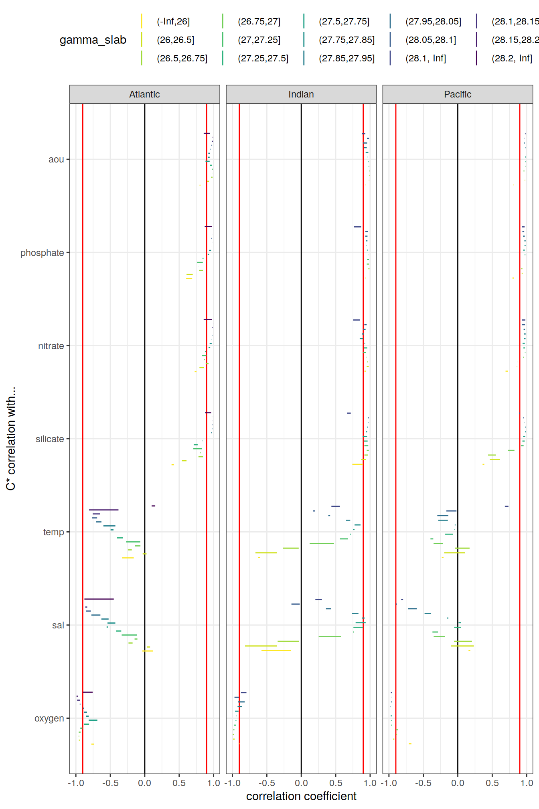

eMLR - assumption testing
Jens Daniel Müller
07 December, 2020
Last updated: 2020-12-07
Checks: 7 0
Knit directory: emlr_obs_v_XXX/
This reproducible R Markdown analysis was created with workflowr (version 1.6.2). The Checks tab describes the reproducibility checks that were applied when the results were created. The Past versions tab lists the development history.
Great! Since the R Markdown file has been committed to the Git repository, you know the exact version of the code that produced these results.
Great job! The global environment was empty. Objects defined in the global environment can affect the analysis in your R Markdown file in unknown ways. For reproduciblity it’s best to always run the code in an empty environment.
The command set.seed(20200707) was run prior to running the code in the R Markdown file. Setting a seed ensures that any results that rely on randomness, e.g. subsampling or permutations, are reproducible.
Great job! Recording the operating system, R version, and package versions is critical for reproducibility.
Nice! There were no cached chunks for this analysis, so you can be confident that you successfully produced the results during this run.
Great job! Using relative paths to the files within your workflowr project makes it easier to run your code on other machines.
Great! You are using Git for version control. Tracking code development and connecting the code version to the results is critical for reproducibility.
The results in this page were generated with repository version 263f926. See the Past versions tab to see a history of the changes made to the R Markdown and HTML files.
Note that you need to be careful to ensure that all relevant files for the analysis have been committed to Git prior to generating the results (you can use wflow_publish or wflow_git_commit). workflowr only checks the R Markdown file, but you know if there are other scripts or data files that it depends on. Below is the status of the Git repository when the results were generated:
Ignored files:
Ignored: .Rhistory
Ignored: .Rproj.user/
Unstaged changes:
Modified: code/Workflowr_project_managment.R
Modified: data/auxillary/params_local.rds
Note that any generated files, e.g. HTML, png, CSS, etc., are not included in this status report because it is ok for generated content to have uncommitted changes.
These are the previous versions of the repository in which changes were made to the R Markdown (analysis/eMLR_assumption_testing.Rmd) and HTML (docs/eMLR_assumption_testing.html) files. If you’ve configured a remote Git repository (see ?wflow_git_remote), click on the hyperlinks in the table below to view the files as they were in that past version.
| File | Version | Author | Date | Message |
|---|---|---|---|---|
| html | 143d6fa | jens-daniel-mueller | 2020-12-07 | Build site. |
| Rmd | 33b1973 | jens-daniel-mueller | 2020-12-07 | run with WOCE flag 2 only |
| html | abc6818 | jens-daniel-mueller | 2020-12-03 | Build site. |
| Rmd | 992ba15 | jens-daniel-mueller | 2020-12-03 | rebuild with variable inventory depth |
| html | c8c2e7b | jens-daniel-mueller | 2020-12-03 | Build site. |
| Rmd | 83203db | jens-daniel-mueller | 2020-12-03 | calculate cant with variable inventory depth |
| html | 090e4d5 | jens-daniel-mueller | 2020-12-02 | Build site. |
| html | 7c25f7a | jens-daniel-mueller | 2020-12-02 | Build site. |
| html | ec8dc38 | jens-daniel-mueller | 2020-12-02 | Build site. |
| html | c987de1 | jens-daniel-mueller | 2020-12-02 | Build site. |
| html | f8358f8 | jens-daniel-mueller | 2020-12-02 | Build site. |
| html | b03ddb8 | jens-daniel-mueller | 2020-12-02 | Build site. |
| Rmd | 9183e8f | jens-daniel-mueller | 2020-12-02 | revised assignment of era to eras |
| html | 22d0127 | jens-daniel-mueller | 2020-12-01 | Build site. |
| html | 0ff728b | jens-daniel-mueller | 2020-12-01 | Build site. |
| html | 91435ae | jens-daniel-mueller | 2020-12-01 | Build site. |
| Rmd | 17d09be | jens-daniel-mueller | 2020-12-01 | auto eras naming |
| html | cf19652 | jens-daniel-mueller | 2020-11-30 | Build site. |
| Rmd | 2842970 | jens-daniel-mueller | 2020-11-30 | cleaned for eMLR part only |
| html | 196be51 | jens-daniel-mueller | 2020-11-30 | Build site. |
| Rmd | 7a4b015 | jens-daniel-mueller | 2020-11-30 | first rebuild on ETH server |
| Rmd | bc61ce3 | Jens Müller | 2020-11-30 | Initial commit |
| html | bc61ce3 | Jens Müller | 2020-11-30 | Initial commit |
1 Required data
Required are:
- cleaned and prepared GLODAPv2.2020 file
GLODAP <-
read_csv(paste(path_version_data,
"GLODAPv2.2020_MLR_fitting_ready.csv",
sep = ""))2 Predictor correlation
The correlation between:
- pairs of seven potential predictor variables and
- C* and seven potential predictor variables
were investigated based on:
- property-property plots and
- calculated correlation coeffcients.
2.1 Correlation plots
For an overview, a random subset of data from all eras was plotted separately for both basins, with color indicating neutral density slabs (high density = dark-purple color).
GLODAP %>%
filter(basin == "Atlantic") %>%
sample_frac(0.05) %>%
ggpairs(columns = c("cstar",
"sal",
"tem",
"aou",
"oxygen",
"silicate",
"phosphate",
"phosphate_star"),
upper = "blank",
ggplot2::aes(col = gamma_slab, fill = gamma_slab, alpha = 0.01)) +
scale_fill_viridis_d(direction = -1) +
scale_color_viridis_d(direction = -1) +
labs(title = paste("Basin: Atlantic | era: all | subsample size: 5 % of",
nrow(GLODAP %>% filter(basin == "Atlantic"))))
GLODAP %>%
filter(basin == "Indo-Pacific") %>%
sample_frac(0.05) %>%
ggpairs(columns = c("cstar",
"sal",
"tem",
"aou",
"oxygen",
"silicate",
"phosphate",
"phosphate_star"),
upper = "blank",
ggplot2::aes(col = gamma_slab, fill = gamma_slab, alpha = 0.01)) +
scale_fill_viridis_d(direction = -1) +
scale_color_viridis_d(direction = -1) +
labs(title = paste("Basin: Indo-Pacific | era: all | subsample size: 5 % of",
nrow(GLODAP %>% filter(basin == "Indo-Pacific") )))
Individual correlation plots for each basin, era and neutral density (gamma) slab are available at updata.
if (params_local$plot_all_figures == "y") {
for (i_basin in unique(GLODAP$basin)) {
for (i_era in unique(GLODAP$era)) {
# i_basin <- unique(GLODAP$basin)[1]
# i_era <- unique(GLODAP$era)[1]
# print(i_basin)
# print(i_era)
GLODAP_basin_era <- GLODAP %>%
filter(basin == i_basin,
era == i_era)
for (i_gamma_slab in unique(GLODAP_basin_era$gamma_slab)) {
# i_gamma_slab <- unique(GLODAP_basin_era$gamma_slab)[5]
# print(i_gamma_slab)
GLODAP_highlight <- GLODAP_basin_era %>%
mutate(gamma_highlight = if_else(gamma_slab == i_gamma_slab,
"in", "out")) %>%
arrange(desc(gamma_highlight))
p <- GLODAP_highlight %>%
ggpairs(
columns = c(
"cstar",
"sal",
"tem",
"aou",
"oxygen",
"silicate",
"phosphate",
"phosphate_star"
),
ggplot2::aes(
col = gamma_highlight,
fill = gamma_highlight,
alpha = 0.01
)
) +
scale_fill_manual(values = c("red", "grey")) +
scale_color_manual(values = c("red", "grey")) +
labs(
title = paste(
i_era,
"|",
i_basin,
"| Gamma slab",
i_gamma_slab,
"| # obs total",
nrow(GLODAP_basin_era),
"| # obs slab",
nrow(GLODAP_highlight %>%
filter(gamma_highlight == "in"))
)
)
png(
filename = paste(
path_version_figures,
"Observations_correlation/",
paste(
"Predictor_correlation",
i_era,
i_basin,
i_gamma_slab,
".png",
sep = "_"
),
sep = ""),
width = 12,
height = 12,
units = "in",
res = 300
)
print(p)
dev.off()
}
}
}
}2.2 Correlation assesment
2.2.1 Calculation of correlation coeffcients
Correlation coefficients were calculated indivdually within each slabs, era and basin.
for (i_basin in unique(GLODAP$basin)) {
for (i_era in unique(GLODAP$era)) {
# i_basin <- unique(GLODAP$basin)[1]
# i_era <- unique(GLODAP$era)[1]
print(i_basin)
print(i_era)
GLODAP_basin_era <- GLODAP %>%
filter(basin == i_basin,
era == i_era) %>%
select(basin,
era,
gamma_slab,
cstar,
sal,
tem,
aou,
oxygen,
silicate,
phosphate,
phosphate_star)
for (i_gamma_slab in unique(GLODAP_basin_era$gamma_slab)) {
# i_gamma_slab <- unique(GLODAP_basin_era$gamma_slab)[5]
print(i_gamma_slab)
GLODAP_basin_era_slab <- GLODAP_basin_era %>%
filter(gamma_slab == i_gamma_slab)
cor_cstar_predictor_temp <- GLODAP_basin_era_slab %>%
select(-c(basin, era, gamma_slab)) %>%
correlate() %>%
focus(cstar) %>%
mutate(basin = i_basin,
era = i_era,
gamma_slab = i_gamma_slab)
if (exists("cor_cstar_predictor")) {
cor_cstar_predictor <- bind_rows(cor_cstar_predictor, cor_cstar_predictor_temp)
}
if (!exists("cor_cstar_predictor")) {
cor_cstar_predictor <- cor_cstar_predictor_temp
}
cor_predictors_temp <- GLODAP_basin_era_slab %>%
select(-c(basin, era, gamma_slab)) %>%
correlate() %>%
shave %>%
stretch() %>%
filter(!is.na(r),
x != "cstar",
y != "cstar") %>%
mutate(pair = paste(x, y, sep = " + ")) %>%
select(-c(x, y)) %>%
mutate(basin = i_basin,
era = i_era,
gamma_slab = i_gamma_slab)
if (exists("cor_predictors")) {
cor_predictors <- bind_rows(cor_predictors, cor_predictors_temp)
}
if (!exists("cor_predictors")) {
cor_predictors <- cor_predictors_temp
}
}
}
}
rm(cor_predictors_temp, cor_cstar_predictor_temp,
i_gamma_slab, i_era, i_basin,
GLODAP_basin_era, GLODAP_basin_era_slab)2.2.2 Predictor pairs
Below, the range of correlations coefficients for each predictor pair is plotted per basin (facet) and density slab (color). Note that the range indicates the min and max values of in total 3 calculated coefficients (one per era).
cor_predictors_stats <- cor_predictors %>%
group_by(pair, basin, gamma_slab) %>%
summarise(mean_r = mean(r),
min_r = min(r),
max_r = max(r)) %>%
ungroup()
cor_predictors_stats %>%
mutate(pair = reorder(pair, mean_r)) %>%
ggplot() +
geom_vline(xintercept = c(-0.9, 0.9), col = "red") +
geom_vline(xintercept = 0) +
geom_linerange(
aes(y = pair, xmin = min_r, xmax = max_r, col = gamma_slab),
position = position_dodge(width = 0.6)) +
facet_wrap(~basin) +
scale_color_viridis_d(direction = -1) +
labs(x = "correlation coefficient", y = "") +
theme(legend.position = "top")
kable(cor_predictors_stats) %>%
add_header_above() %>%
kable_styling() %>%
scroll_box(width = "100%", height = "400px")| pair | basin | gamma_slab | mean_r | min_r | max_r |
|---|---|---|---|---|---|
| aou + oxygen | Atlantic | (-Inf,26] | -0.9475459 | -0.9604084 | -0.9240131 |
| aou + oxygen | Atlantic | (26,26.5] | -0.8376354 | -0.9122340 | -0.6914285 |
| aou + oxygen | Atlantic | (26.5,26.75] | -0.9443749 | -0.9742933 | -0.9061920 |
| aou + oxygen | Atlantic | (26.75,27] | -0.9779570 | -0.9797903 | -0.9751253 |
| aou + oxygen | Atlantic | (27,27.25] | -0.9763421 | -0.9807774 | -0.9679562 |
| aou + oxygen | Atlantic | (27.25,27.5] | -0.9405934 | -0.9482981 | -0.9346161 |
| aou + oxygen | Atlantic | (27.5,27.75] | -0.9281214 | -0.9592423 | -0.9124116 |
| aou + oxygen | Atlantic | (27.75,27.85] | -0.9663905 | -0.9768900 | -0.9516632 |
| aou + oxygen | Atlantic | (27.85,27.95] | -0.9872608 | -0.9916426 | -0.9846616 |
| aou + oxygen | Atlantic | (27.95,28.05] | -0.9869444 | -0.9899383 | -0.9819898 |
| aou + oxygen | Atlantic | (28.05,28.1] | -0.9877123 | -0.9943524 | -0.9776371 |
| aou + oxygen | Atlantic | (28.1,28.15] | -0.9920253 | -0.9956170 | -0.9870247 |
| aou + oxygen | Atlantic | (28.15,28.2] | -0.9968181 | -0.9993272 | -0.9930698 |
| aou + oxygen | Atlantic | (28.2, Inf] | -0.9862748 | -0.9895300 | -0.9828139 |
| aou + oxygen | Indo-Pacific | (-Inf,26] | -0.9225841 | -0.9650674 | -0.8940790 |
| aou + oxygen | Indo-Pacific | (26,26.5] | -0.9829374 | -0.9894647 | -0.9743206 |
| aou + oxygen | Indo-Pacific | (26.5,26.75] | -0.9857974 | -0.9908652 | -0.9815298 |
| aou + oxygen | Indo-Pacific | (26.75,27] | -0.9848885 | -0.9874161 | -0.9829407 |
| aou + oxygen | Indo-Pacific | (27,27.25] | -0.9916673 | -0.9931810 | -0.9890395 |
| aou + oxygen | Indo-Pacific | (27.25,27.5] | -0.9930472 | -0.9953331 | -0.9888073 |
| aou + oxygen | Indo-Pacific | (27.5,27.75] | -0.9917916 | -0.9939170 | -0.9882951 |
| aou + oxygen | Indo-Pacific | (27.75,27.85] | -0.9963587 | -0.9989619 | -0.9929505 |
| aou + oxygen | Indo-Pacific | (27.85,27.95] | -0.9965559 | -0.9987469 | -0.9943845 |
| aou + oxygen | Indo-Pacific | (27.95,28.05] | -0.9948784 | -0.9961225 | -0.9931119 |
| aou + oxygen | Indo-Pacific | (28.05,28.1] | -0.9940503 | -0.9958612 | -0.9922629 |
| aou + oxygen | Indo-Pacific | (28.1, Inf] | -0.9915487 | -0.9926241 | -0.9897586 |
| aou + phosphate | Atlantic | (-Inf,26] | 0.3888703 | -0.0131851 | 0.7434863 |
| aou + phosphate | Atlantic | (26,26.5] | 0.6335034 | 0.5010055 | 0.7585618 |
| aou + phosphate | Atlantic | (26.5,26.75] | 0.8515513 | 0.7821568 | 0.9204643 |
| aou + phosphate | Atlantic | (26.75,27] | 0.8686892 | 0.8463406 | 0.8847913 |
| aou + phosphate | Atlantic | (27,27.25] | 0.8503990 | 0.8230116 | 0.8995390 |
| aou + phosphate | Atlantic | (27.25,27.5] | 0.7291386 | 0.6700878 | 0.7929829 |
| aou + phosphate | Atlantic | (27.5,27.75] | 0.8597088 | 0.8400869 | 0.8981321 |
| aou + phosphate | Atlantic | (27.75,27.85] | 0.9317772 | 0.9231029 | 0.9483883 |
| aou + phosphate | Atlantic | (27.85,27.95] | 0.9464736 | 0.9420322 | 0.9508141 |
| aou + phosphate | Atlantic | (27.95,28.05] | 0.9568862 | 0.9452863 | 0.9764938 |
| aou + phosphate | Atlantic | (28.05,28.1] | 0.9637626 | 0.9374488 | 0.9854537 |
| aou + phosphate | Atlantic | (28.1,28.15] | 0.9765218 | 0.9624925 | 0.9851908 |
| aou + phosphate | Atlantic | (28.15,28.2] | 0.9860603 | 0.9686645 | 0.9964244 |
| aou + phosphate | Atlantic | (28.2, Inf] | 0.8812195 | 0.8402736 | 0.9447263 |
| aou + phosphate | Indo-Pacific | (-Inf,26] | 0.9403233 | 0.9114775 | 0.9605157 |
| aou + phosphate | Indo-Pacific | (26,26.5] | 0.9453389 | 0.9309541 | 0.9555253 |
| aou + phosphate | Indo-Pacific | (26.5,26.75] | 0.9402811 | 0.9323229 | 0.9486438 |
| aou + phosphate | Indo-Pacific | (26.75,27] | 0.9466474 | 0.9367838 | 0.9568206 |
| aou + phosphate | Indo-Pacific | (27,27.25] | 0.9669283 | 0.9525316 | 0.9791675 |
| aou + phosphate | Indo-Pacific | (27.25,27.5] | 0.9627738 | 0.9417207 | 0.9780882 |
| aou + phosphate | Indo-Pacific | (27.5,27.75] | 0.9442072 | 0.9219530 | 0.9603218 |
| aou + phosphate | Indo-Pacific | (27.75,27.85] | 0.9807428 | 0.9699732 | 0.9879206 |
| aou + phosphate | Indo-Pacific | (27.85,27.95] | 0.9783662 | 0.9672995 | 0.9884102 |
| aou + phosphate | Indo-Pacific | (27.95,28.05] | 0.9643082 | 0.9514111 | 0.9742784 |
| aou + phosphate | Indo-Pacific | (28.05,28.1] | 0.9493456 | 0.9323508 | 0.9656919 |
| aou + phosphate | Indo-Pacific | (28.1, Inf] | 0.7695478 | 0.7047120 | 0.8256703 |
| aou + phosphate_star | Atlantic | (-Inf,26] | -0.2308736 | -0.6713696 | 0.3362197 |
| aou + phosphate_star | Atlantic | (26,26.5] | 0.2400808 | 0.1251833 | 0.3754281 |
| aou + phosphate_star | Atlantic | (26.5,26.75] | 0.4799837 | 0.4185957 | 0.6009722 |
| aou + phosphate_star | Atlantic | (26.75,27] | 0.3077992 | 0.2619873 | 0.3378343 |
| aou + phosphate_star | Atlantic | (27,27.25] | 0.3158252 | 0.0860001 | 0.5459123 |
| aou + phosphate_star | Atlantic | (27.25,27.5] | 0.2385712 | 0.0981954 | 0.3687213 |
| aou + phosphate_star | Atlantic | (27.5,27.75] | 0.5634749 | 0.5479370 | 0.5850090 |
| aou + phosphate_star | Atlantic | (27.75,27.85] | 0.6929701 | 0.6694551 | 0.7102207 |
| aou + phosphate_star | Atlantic | (27.85,27.95] | 0.6557701 | 0.5979971 | 0.6891330 |
| aou + phosphate_star | Atlantic | (27.95,28.05] | 0.7975394 | 0.7364215 | 0.8797231 |
| aou + phosphate_star | Atlantic | (28.05,28.1] | 0.8661918 | 0.7846540 | 0.9393153 |
| aou + phosphate_star | Atlantic | (28.1,28.15] | 0.9102429 | 0.8632542 | 0.9401397 |
| aou + phosphate_star | Atlantic | (28.15,28.2] | 0.9500863 | 0.8834488 | 0.9897098 |
| aou + phosphate_star | Atlantic | (28.2, Inf] | 0.6602029 | 0.5318511 | 0.8316891 |
| aou + phosphate_star | Indo-Pacific | (-Inf,26] | 0.6704597 | 0.5646792 | 0.7372591 |
| aou + phosphate_star | Indo-Pacific | (26,26.5] | 0.5243199 | 0.3917025 | 0.6245846 |
| aou + phosphate_star | Indo-Pacific | (26.5,26.75] | 0.3590663 | 0.2318206 | 0.5661872 |
| aou + phosphate_star | Indo-Pacific | (26.75,27] | 0.3525601 | 0.2019545 | 0.4746092 |
| aou + phosphate_star | Indo-Pacific | (27,27.25] | 0.0798626 | -0.1113102 | 0.2204618 |
| aou + phosphate_star | Indo-Pacific | (27.25,27.5] | -0.4058610 | -0.4594826 | -0.3489556 |
| aou + phosphate_star | Indo-Pacific | (27.5,27.75] | -0.3097733 | -0.5325436 | 0.0429534 |
| aou + phosphate_star | Indo-Pacific | (27.75,27.85] | -0.5160432 | -0.5968477 | -0.4720226 |
| aou + phosphate_star | Indo-Pacific | (27.85,27.95] | -0.1466295 | -0.1635289 | -0.1209193 |
| aou + phosphate_star | Indo-Pacific | (27.95,28.05] | 0.1512806 | 0.0652943 | 0.1990064 |
| aou + phosphate_star | Indo-Pacific | (28.05,28.1] | 0.2759839 | 0.2596079 | 0.2926531 |
| aou + phosphate_star | Indo-Pacific | (28.1, Inf] | -0.6824225 | -0.7096336 | -0.6544791 |
| aou + silicate | Atlantic | (-Inf,26] | 0.1715764 | -0.2529136 | 0.5754309 |
| aou + silicate | Atlantic | (26,26.5] | 0.5590474 | 0.4204551 | 0.6884459 |
| aou + silicate | Atlantic | (26.5,26.75] | 0.8390892 | 0.7903177 | 0.9219485 |
| aou + silicate | Atlantic | (26.75,27] | 0.8630017 | 0.8263096 | 0.8842078 |
| aou + silicate | Atlantic | (27,27.25] | 0.8071165 | 0.7334645 | 0.8928015 |
| aou + silicate | Atlantic | (27.25,27.5] | 0.5364679 | 0.3638514 | 0.6975798 |
| aou + silicate | Atlantic | (27.5,27.75] | 0.6733371 | 0.6624928 | 0.6915165 |
| aou + silicate | Atlantic | (27.75,27.85] | 0.8402694 | 0.8234475 | 0.8490667 |
| aou + silicate | Atlantic | (27.85,27.95] | 0.8900067 | 0.8896495 | 0.8901947 |
| aou + silicate | Atlantic | (27.95,28.05] | 0.9387087 | 0.9332973 | 0.9460396 |
| aou + silicate | Atlantic | (28.05,28.1] | 0.9644832 | 0.9495511 | 0.9794473 |
| aou + silicate | Atlantic | (28.1,28.15] | 0.9769482 | 0.9715662 | 0.9812530 |
| aou + silicate | Atlantic | (28.15,28.2] | 0.9899075 | 0.9808916 | 0.9961188 |
| aou + silicate | Atlantic | (28.2, Inf] | 0.8904637 | 0.8645424 | 0.9298133 |
| aou + silicate | Indo-Pacific | (-Inf,26] | 0.7445176 | 0.6855603 | 0.7937723 |
| aou + silicate | Indo-Pacific | (26,26.5] | 0.6534422 | 0.5604762 | 0.7266831 |
| aou + silicate | Indo-Pacific | (26.5,26.75] | 0.6124967 | 0.4433605 | 0.7050511 |
| aou + silicate | Indo-Pacific | (26.75,27] | 0.7486032 | 0.7138995 | 0.7793044 |
| aou + silicate | Indo-Pacific | (27,27.25] | 0.8755205 | 0.8424043 | 0.9062791 |
| aou + silicate | Indo-Pacific | (27.25,27.5] | 0.9023023 | 0.8663495 | 0.9355127 |
| aou + silicate | Indo-Pacific | (27.5,27.75] | 0.9200075 | 0.8737882 | 0.9475280 |
| aou + silicate | Indo-Pacific | (27.75,27.85] | 0.9661888 | 0.9517144 | 0.9744475 |
| aou + silicate | Indo-Pacific | (27.85,27.95] | 0.9616734 | 0.9492053 | 0.9696058 |
| aou + silicate | Indo-Pacific | (27.95,28.05] | 0.9471854 | 0.9387939 | 0.9520240 |
| aou + silicate | Indo-Pacific | (28.05,28.1] | 0.9462642 | 0.9448045 | 0.9490396 |
| aou + silicate | Indo-Pacific | (28.1, Inf] | 0.6738493 | 0.6443323 | 0.6891115 |
| oxygen + phosphate | Atlantic | (-Inf,26] | -0.1825309 | -0.5219585 | 0.2111471 |
| oxygen + phosphate | Atlantic | (26,26.5] | -0.1586801 | -0.4473396 | 0.2523740 |
| oxygen + phosphate | Atlantic | (26.5,26.75] | -0.6408755 | -0.8115984 | -0.4514074 |
| oxygen + phosphate | Atlantic | (26.75,27] | -0.7490786 | -0.7758943 | -0.7098696 |
| oxygen + phosphate | Atlantic | (27,27.25] | -0.7205009 | -0.7982230 | -0.6576784 |
| oxygen + phosphate | Atlantic | (27.25,27.5] | -0.4674527 | -0.5661163 | -0.3968979 |
| oxygen + phosphate | Atlantic | (27.5,27.75] | -0.6319463 | -0.7642557 | -0.5650689 |
| oxygen + phosphate | Atlantic | (27.75,27.85] | -0.8224622 | -0.8828373 | -0.7698636 |
| oxygen + phosphate | Atlantic | (27.85,27.95] | -0.8922560 | -0.9132974 | -0.8809867 |
| oxygen + phosphate | Atlantic | (27.95,28.05] | -0.9142458 | -0.9521049 | -0.8799858 |
| oxygen + phosphate | Atlantic | (28.05,28.1] | -0.9208681 | -0.9715371 | -0.8532421 |
| oxygen + phosphate | Atlantic | (28.1,28.15] | -0.9476589 | -0.9717929 | -0.9115573 |
| oxygen + phosphate | Atlantic | (28.15,28.2] | -0.9745218 | -0.9959869 | -0.9367909 |
| oxygen + phosphate | Atlantic | (28.2, Inf] | -0.8124353 | -0.9021662 | -0.7530637 |
| oxygen + phosphate | Indo-Pacific | (-Inf,26] | -0.7895512 | -0.9000905 | -0.6990770 |
| oxygen + phosphate | Indo-Pacific | (26,26.5] | -0.8834724 | -0.8968789 | -0.8617212 |
| oxygen + phosphate | Indo-Pacific | (26.5,26.75] | -0.8801755 | -0.8924076 | -0.8719360 |
| oxygen + phosphate | Indo-Pacific | (26.75,27] | -0.8839458 | -0.8955332 | -0.8753526 |
| oxygen + phosphate | Indo-Pacific | (27,27.25] | -0.9337330 | -0.9559706 | -0.9081046 |
| oxygen + phosphate | Indo-Pacific | (27.25,27.5] | -0.9415252 | -0.9627543 | -0.9014370 |
| oxygen + phosphate | Indo-Pacific | (27.5,27.75] | -0.9410969 | -0.9703006 | -0.8890073 |
| oxygen + phosphate | Indo-Pacific | (27.75,27.85] | -0.9736482 | -0.9884776 | -0.9543331 |
| oxygen + phosphate | Indo-Pacific | (27.85,27.95] | -0.9685851 | -0.9861086 | -0.9516758 |
| oxygen + phosphate | Indo-Pacific | (27.95,28.05] | -0.9414245 | -0.9554557 | -0.9226960 |
| oxygen + phosphate | Indo-Pacific | (28.05,28.1] | -0.9176222 | -0.9420694 | -0.8943327 |
| oxygen + phosphate | Indo-Pacific | (28.1, Inf] | -0.6934721 | -0.7574114 | -0.6157272 |
| oxygen + phosphate_star | Atlantic | (-Inf,26] | 0.4475645 | -0.0326522 | 0.8158415 |
| oxygen + phosphate_star | Atlantic | (26,26.5] | 0.2795871 | 0.0179654 | 0.5352183 |
| oxygen + phosphate_star | Atlantic | (26.5,26.75] | -0.1803317 | -0.4088299 | -0.0005262 |
| oxygen + phosphate_star | Atlantic | (26.75,27] | -0.1060111 | -0.1453996 | -0.0444809 |
| oxygen + phosphate_star | Atlantic | (27,27.25] | -0.1120819 | -0.3729706 | 0.1077330 |
| oxygen + phosphate_star | Atlantic | (27.25,27.5] | 0.0916099 | -0.0617877 | 0.2312302 |
| oxygen + phosphate_star | Atlantic | (27.5,27.75] | -0.2417290 | -0.3611046 | -0.1775145 |
| oxygen + phosphate_star | Atlantic | (27.75,27.85] | -0.5042326 | -0.5606543 | -0.4694156 |
| oxygen + phosphate_star | Atlantic | (27.85,27.95] | -0.5422062 | -0.5690693 | -0.5066603 |
| oxygen + phosphate_star | Atlantic | (27.95,28.05] | -0.7135464 | -0.8241205 | -0.6565024 |
| oxygen + phosphate_star | Atlantic | (28.05,28.1] | -0.7921038 | -0.9106069 | -0.6483708 |
| oxygen + phosphate_star | Atlantic | (28.1,28.15] | -0.8590423 | -0.9137212 | -0.7773090 |
| oxygen + phosphate_star | Atlantic | (28.15,28.2] | -0.9292479 | -0.9885038 | -0.8276423 |
| oxygen + phosphate_star | Atlantic | (28.2, Inf] | -0.5545541 | -0.7615269 | -0.3991429 |
| oxygen + phosphate_star | Indo-Pacific | (-Inf,26] | -0.3886163 | -0.5531003 | -0.1918400 |
| oxygen + phosphate_star | Indo-Pacific | (26,26.5] | -0.3827524 | -0.4414941 | -0.2921830 |
| oxygen + phosphate_star | Indo-Pacific | (26.5,26.75] | -0.2164125 | -0.4055658 | -0.0677368 |
| oxygen + phosphate_star | Indo-Pacific | (26.75,27] | -0.1973286 | -0.3110231 | -0.0615838 |
| oxygen + phosphate_star | Indo-Pacific | (27,27.25] | 0.0332031 | -0.1207676 | 0.2400105 |
| oxygen + phosphate_star | Indo-Pacific | (27.25,27.5] | 0.4771503 | 0.3935722 | 0.5620170 |
| oxygen + phosphate_star | Indo-Pacific | (27.5,27.75] | 0.3219580 | -0.0984214 | 0.6144319 |
| oxygen + phosphate_star | Indo-Pacific | (27.75,27.85] | 0.5521641 | 0.5176503 | 0.5999501 |
| oxygen + phosphate_star | Indo-Pacific | (27.85,27.95] | 0.1956967 | 0.1421772 | 0.2232467 |
| oxygen + phosphate_star | Indo-Pacific | (27.95,28.05] | -0.0700489 | -0.1215071 | 0.0110735 |
| oxygen + phosphate_star | Indo-Pacific | (28.05,28.1] | -0.1853379 | -0.2133744 | -0.1617405 |
| oxygen + phosphate_star | Indo-Pacific | (28.1, Inf] | 0.7624835 | 0.7364235 | 0.7916314 |
| oxygen + silicate | Atlantic | (-Inf,26] | 0.0263998 | -0.3797872 | 0.4278503 |
| oxygen + silicate | Atlantic | (26,26.5] | -0.1071467 | -0.4136890 | 0.3259815 |
| oxygen + silicate | Atlantic | (26.5,26.75] | -0.6472776 | -0.8297327 | -0.5015393 |
| oxygen + silicate | Atlantic | (26.75,27] | -0.7597555 | -0.7868853 | -0.7122282 |
| oxygen + silicate | Atlantic | (27,27.25] | -0.6789762 | -0.7979845 | -0.6022959 |
| oxygen + silicate | Atlantic | (27.25,27.5] | -0.2533973 | -0.4575626 | -0.0627752 |
| oxygen + silicate | Atlantic | (27.5,27.75] | -0.4119352 | -0.5103928 | -0.3624847 |
| oxygen + silicate | Atlantic | (27.75,27.85] | -0.7097466 | -0.7534701 | -0.6537645 |
| oxygen + silicate | Atlantic | (27.85,27.95] | -0.8170713 | -0.8342830 | -0.8065055 |
| oxygen + silicate | Atlantic | (27.95,28.05] | -0.8795713 | -0.8968600 | -0.8562238 |
| oxygen + silicate | Atlantic | (28.05,28.1] | -0.9178215 | -0.9567438 | -0.8693152 |
| oxygen + silicate | Atlantic | (28.1,28.15] | -0.9476122 | -0.9581688 | -0.9273083 |
| oxygen + silicate | Atlantic | (28.15,28.2] | -0.9813918 | -0.9950623 | -0.9597882 |
| oxygen + silicate | Atlantic | (28.2, Inf] | -0.8242335 | -0.8828302 | -0.7821554 |
| oxygen + silicate | Indo-Pacific | (-Inf,26] | -0.5258612 | -0.6974290 | -0.3897214 |
| oxygen + silicate | Indo-Pacific | (26,26.5] | -0.5480555 | -0.6632509 | -0.4443005 |
| oxygen + silicate | Indo-Pacific | (26.5,26.75] | -0.4987873 | -0.6296886 | -0.3070876 |
| oxygen + silicate | Indo-Pacific | (26.75,27] | -0.6417939 | -0.6698871 | -0.5956745 |
| oxygen + silicate | Indo-Pacific | (27,27.25] | -0.8192398 | -0.8584587 | -0.7723163 |
| oxygen + silicate | Indo-Pacific | (27.25,27.5] | -0.8598546 | -0.9051176 | -0.8063751 |
| oxygen + silicate | Indo-Pacific | (27.5,27.75] | -0.8800270 | -0.9186177 | -0.8121394 |
| oxygen + silicate | Indo-Pacific | (27.75,27.85] | -0.9513413 | -0.9701586 | -0.9236121 |
| oxygen + silicate | Indo-Pacific | (27.85,27.95] | -0.9457240 | -0.9625760 | -0.9244936 |
| oxygen + silicate | Indo-Pacific | (27.95,28.05] | -0.9206210 | -0.9296656 | -0.9057053 |
| oxygen + silicate | Indo-Pacific | (28.05,28.1] | -0.9178099 | -0.9211302 | -0.9129220 |
| oxygen + silicate | Indo-Pacific | (28.1, Inf] | -0.6048311 | -0.6184626 | -0.5821727 |
| phosphate + phosphate_star | Atlantic | (-Inf,26] | 0.7599458 | 0.6727778 | 0.8695592 |
| phosphate + phosphate_star | Atlantic | (26,26.5] | 0.8926934 | 0.8394516 | 0.9524454 |
| phosphate + phosphate_star | Atlantic | (26.5,26.75] | 0.8631375 | 0.8318898 | 0.8925554 |
| phosphate + phosphate_star | Atlantic | (26.75,27] | 0.7375410 | 0.7352116 | 0.7404379 |
| phosphate + phosphate_star | Atlantic | (27,27.25] | 0.7610591 | 0.6284682 | 0.8566112 |
| phosphate + phosphate_star | Atlantic | (27.25,27.5] | 0.8353192 | 0.8012130 | 0.8577294 |
| phosphate + phosphate_star | Atlantic | (27.5,27.75] | 0.9016282 | 0.8773742 | 0.9159814 |
| phosphate + phosphate_star | Atlantic | (27.75,27.85] | 0.9032925 | 0.8838842 | 0.9249096 |
| phosphate + phosphate_star | Atlantic | (27.85,27.95] | 0.8609893 | 0.8138778 | 0.8904014 |
| phosphate + phosphate_star | Atlantic | (27.95,28.05] | 0.9350033 | 0.9095178 | 0.9578426 |
| phosphate + phosphate_star | Atlantic | (28.05,28.1] | 0.9664516 | 0.9502595 | 0.9825877 |
| phosphate + phosphate_star | Atlantic | (28.1,28.15] | 0.9772367 | 0.9672385 | 0.9837778 |
| phosphate + phosphate_star | Atlantic | (28.15,28.2] | 0.9881560 | 0.9717054 | 0.9980688 |
| phosphate + phosphate_star | Atlantic | (28.2, Inf] | 0.9341519 | 0.9038448 | 0.9666212 |
| phosphate + phosphate_star | Indo-Pacific | (-Inf,26] | 0.8666414 | 0.8358762 | 0.9032171 |
| phosphate + phosphate_star | Indo-Pacific | (26,26.5] | 0.7677448 | 0.6932287 | 0.8357006 |
| phosphate + phosphate_star | Indo-Pacific | (26.5,26.75] | 0.6482217 | 0.5475575 | 0.7959100 |
| phosphate + phosphate_star | Indo-Pacific | (26.75,27] | 0.6296455 | 0.5265606 | 0.7317603 |
| phosphate + phosphate_star | Indo-Pacific | (27,27.25] | 0.3208810 | 0.1885490 | 0.4067649 |
| phosphate + phosphate_star | Indo-Pacific | (27.25,27.5] | -0.1635600 | -0.2203350 | -0.1217933 |
| phosphate + phosphate_star | Indo-Pacific | (27.5,27.75] | -0.0149577 | -0.1961288 | 0.3362262 |
| phosphate + phosphate_star | Indo-Pacific | (27.75,27.85] | -0.3543178 | -0.4719380 | -0.2626272 |
| phosphate + phosphate_star | Indo-Pacific | (27.85,27.95] | 0.0471191 | 0.0242122 | 0.0868954 |
| phosphate + phosphate_star | Indo-Pacific | (27.95,28.05] | 0.3988402 | 0.2845361 | 0.4756119 |
| phosphate + phosphate_star | Indo-Pacific | (28.05,28.1] | 0.5580568 | 0.5287068 | 0.5861616 |
| phosphate + phosphate_star | Indo-Pacific | (28.1, Inf] | -0.0663955 | -0.1160494 | -0.0059865 |
| sal + aou | Atlantic | (-Inf,26] | 0.1728282 | -0.3310034 | 0.5293116 |
| sal + aou | Atlantic | (26,26.5] | -0.1301347 | -0.2192144 | -0.0179934 |
| sal + aou | Atlantic | (26.5,26.75] | -0.3707373 | -0.4775203 | -0.3138988 |
| sal + aou | Atlantic | (26.75,27] | -0.2572295 | -0.2933637 | -0.2100668 |
| sal + aou | Atlantic | (27,27.25] | -0.3209426 | -0.5585937 | -0.0826952 |
| sal + aou | Atlantic | (27.25,27.5] | -0.2118353 | -0.3643351 | -0.0384177 |
| sal + aou | Atlantic | (27.5,27.75] | -0.4070111 | -0.4509077 | -0.3802926 |
| sal + aou | Atlantic | (27.75,27.85] | -0.3667866 | -0.4414521 | -0.2683987 |
| sal + aou | Atlantic | (27.85,27.95] | -0.2482085 | -0.3495390 | -0.0905244 |
| sal + aou | Atlantic | (27.95,28.05] | -0.4613389 | -0.5903829 | -0.3319230 |
| sal + aou | Atlantic | (28.05,28.1] | -0.7071514 | -0.7438565 | -0.6395739 |
| sal + aou | Atlantic | (28.1,28.15] | -0.8184837 | -0.8555868 | -0.7671207 |
| sal + aou | Atlantic | (28.15,28.2] | -0.9185148 | -0.9890539 | -0.8088000 |
| sal + aou | Atlantic | (28.2, Inf] | -0.7000569 | -0.8684545 | -0.5895479 |
| sal + aou | Indo-Pacific | (-Inf,26] | -0.1173101 | -0.1898708 | -0.0482354 |
| sal + aou | Indo-Pacific | (26,26.5] | -0.0534846 | -0.2534704 | 0.1100896 |
| sal + aou | Indo-Pacific | (26.5,26.75] | -0.0689868 | -0.3603408 | 0.1996024 |
| sal + aou | Indo-Pacific | (26.75,27] | -0.1709808 | -0.3554963 | 0.0224913 |
| sal + aou | Indo-Pacific | (27,27.25] | -0.0419487 | -0.1851883 | 0.2286408 |
| sal + aou | Indo-Pacific | (27.25,27.5] | 0.1619388 | 0.0716420 | 0.3392206 |
| sal + aou | Indo-Pacific | (27.5,27.75] | 0.3075864 | 0.1358957 | 0.4876485 |
| sal + aou | Indo-Pacific | (27.75,27.85] | -0.1492963 | -0.4068109 | 0.1567788 |
| sal + aou | Indo-Pacific | (27.85,27.95] | -0.3116390 | -0.6471856 | -0.0154195 |
| sal + aou | Indo-Pacific | (27.95,28.05] | -0.3095800 | -0.4124907 | -0.1633507 |
| sal + aou | Indo-Pacific | (28.05,28.1] | -0.3193106 | -0.4775329 | -0.1977666 |
| sal + aou | Indo-Pacific | (28.1, Inf] | 0.4322752 | 0.3194263 | 0.4954694 |
| sal + oxygen | Atlantic | (-Inf,26] | -0.4276456 | -0.7099211 | -0.0075604 |
| sal + oxygen | Atlantic | (26,26.5] | -0.3874847 | -0.5887437 | -0.1854830 |
| sal + oxygen | Atlantic | (26.5,26.75] | 0.0597151 | -0.1052835 | 0.2702615 |
| sal + oxygen | Atlantic | (26.75,27] | 0.0540200 | -0.0080812 | 0.0995965 |
| sal + oxygen | Atlantic | (27,27.25] | 0.1186974 | -0.1086844 | 0.3873076 |
| sal + oxygen | Atlantic | (27.25,27.5] | -0.1198853 | -0.2980721 | 0.0577937 |
| sal + oxygen | Atlantic | (27.5,27.75] | 0.0564706 | -0.0067686 | 0.1155469 |
| sal + oxygen | Atlantic | (27.75,27.85] | 0.1261331 | 0.0616409 | 0.1641284 |
| sal + oxygen | Atlantic | (27.85,27.95] | 0.1040630 | -0.0279477 | 0.1965993 |
| sal + oxygen | Atlantic | (27.95,28.05] | 0.3372750 | 0.2171075 | 0.4446646 |
| sal + oxygen | Atlantic | (28.05,28.1] | 0.5997841 | 0.4713963 | 0.6782067 |
| sal + oxygen | Atlantic | (28.1,28.15] | 0.7434827 | 0.6571590 | 0.7934782 |
| sal + oxygen | Atlantic | (28.15,28.2] | 0.8870239 | 0.7369940 | 0.9838727 |
| sal + oxygen | Atlantic | (28.2, Inf] | 0.5993637 | 0.4610095 | 0.8022953 |
| sal + oxygen | Indo-Pacific | (-Inf,26] | -0.1825426 | -0.2972814 | -0.1097463 |
| sal + oxygen | Indo-Pacific | (26,26.5] | -0.1139124 | -0.2626501 | 0.0414178 |
| sal + oxygen | Indo-Pacific | (26.5,26.75] | -0.0887988 | -0.3595361 | 0.1789516 |
| sal + oxygen | Indo-Pacific | (26.75,27] | 0.0048916 | -0.1760922 | 0.1819191 |
| sal + oxygen | Indo-Pacific | (27,27.25] | -0.0773595 | -0.3645994 | 0.0765127 |
| sal + oxygen | Indo-Pacific | (27.25,27.5] | -0.2593776 | -0.4664504 | -0.1540596 |
| sal + oxygen | Indo-Pacific | (27.5,27.75] | -0.4055844 | -0.5706416 | -0.2214109 |
| sal + oxygen | Indo-Pacific | (27.75,27.85] | 0.0834327 | -0.2640563 | 0.3798210 |
| sal + oxygen | Indo-Pacific | (27.85,27.95] | 0.2524370 | -0.0770478 | 0.6285780 |
| sal + oxygen | Indo-Pacific | (27.95,28.05] | 0.2295184 | 0.0627413 | 0.3484798 |
| sal + oxygen | Indo-Pacific | (28.05,28.1] | 0.2246151 | 0.0835466 | 0.4064760 |
| sal + oxygen | Indo-Pacific | (28.1, Inf] | -0.5096491 | -0.5608475 | -0.4088912 |
| sal + phosphate | Atlantic | (-Inf,26] | -0.6563522 | -0.7613570 | -0.5154934 |
| sal + phosphate | Atlantic | (26,26.5] | -0.8057593 | -0.8998143 | -0.7453265 |
| sal + phosphate | Atlantic | (26.5,26.75] | -0.7803907 | -0.8218674 | -0.7461832 |
| sal + phosphate | Atlantic | (26.75,27] | -0.6892579 | -0.6941168 | -0.6859849 |
| sal + phosphate | Atlantic | (27,27.25] | -0.7516987 | -0.8535016 | -0.6129714 |
| sal + phosphate | Atlantic | (27.25,27.5] | -0.7855928 | -0.8346793 | -0.7061449 |
| sal + phosphate | Atlantic | (27.5,27.75] | -0.7529002 | -0.8178183 | -0.6707400 |
| sal + phosphate | Atlantic | (27.75,27.85] | -0.6049935 | -0.7090312 | -0.4432162 |
| sal + phosphate | Atlantic | (27.85,27.95] | -0.4926730 | -0.5905708 | -0.3292776 |
| sal + phosphate | Atlantic | (27.95,28.05] | -0.6292137 | -0.7767081 | -0.5506984 |
| sal + phosphate | Atlantic | (28.05,28.1] | -0.8226525 | -0.8372336 | -0.7982063 |
| sal + phosphate | Atlantic | (28.1,28.15] | -0.8935990 | -0.9126107 | -0.8768357 |
| sal + phosphate | Atlantic | (28.15,28.2] | -0.9515136 | -0.9866980 | -0.9135176 |
| sal + phosphate | Atlantic | (28.2, Inf] | -0.9399225 | -0.9769630 | -0.9143670 |
| sal + phosphate | Indo-Pacific | (-Inf,26] | -0.2202770 | -0.2940559 | -0.1754456 |
| sal + phosphate | Indo-Pacific | (26,26.5] | -0.2732699 | -0.4947387 | -0.1162393 |
| sal + phosphate | Indo-Pacific | (26.5,26.75] | -0.3192358 | -0.5998758 | -0.1015681 |
| sal + phosphate | Indo-Pacific | (26.75,27] | -0.4165732 | -0.6032815 | -0.2335277 |
| sal + phosphate | Indo-Pacific | (27,27.25] | -0.2099069 | -0.3467311 | 0.0176117 |
| sal + phosphate | Indo-Pacific | (27.25,27.5] | 0.0741531 | -0.0095587 | 0.1570137 |
| sal + phosphate | Indo-Pacific | (27.5,27.75] | 0.3471751 | 0.1647529 | 0.6700848 |
| sal + phosphate | Indo-Pacific | (27.75,27.85] | -0.1764670 | -0.3787838 | 0.0911866 |
| sal + phosphate | Indo-Pacific | (27.85,27.95] | -0.3727843 | -0.6585248 | -0.0961576 |
| sal + phosphate | Indo-Pacific | (27.95,28.05] | -0.4691032 | -0.5609125 | -0.3342866 |
| sal + phosphate | Indo-Pacific | (28.05,28.1] | -0.5289906 | -0.6456253 | -0.4284119 |
| sal + phosphate | Indo-Pacific | (28.1, Inf] | -0.0673131 | -0.1851778 | 0.0144356 |
| sal + phosphate_star | Atlantic | (-Inf,26] | -0.8889567 | -0.9000203 | -0.8703544 |
| sal + phosphate_star | Atlantic | (26,26.5] | -0.9647768 | -0.9709098 | -0.9592886 |
| sal + phosphate_star | Atlantic | (26.5,26.75] | -0.9745007 | -0.9755540 | -0.9736950 |
| sal + phosphate_star | Atlantic | (26.75,27] | -0.9804797 | -0.9831555 | -0.9764206 |
| sal + phosphate_star | Atlantic | (27,27.25] | -0.9815060 | -0.9829295 | -0.9793023 |
| sal + phosphate_star | Atlantic | (27.25,27.5] | -0.9637612 | -0.9745819 | -0.9428075 |
| sal + phosphate_star | Atlantic | (27.5,27.75] | -0.9171238 | -0.9443520 | -0.8839046 |
| sal + phosphate_star | Atlantic | (27.75,27.85] | -0.8294143 | -0.8900393 | -0.7200137 |
| sal + phosphate_star | Atlantic | (27.85,27.95] | -0.8062819 | -0.8447311 | -0.7368739 |
| sal + phosphate_star | Atlantic | (27.95,28.05] | -0.7995445 | -0.9030424 | -0.6912208 |
| sal + phosphate_star | Atlantic | (28.05,28.1] | -0.9012469 | -0.9338090 | -0.8606082 |
| sal + phosphate_star | Atlantic | (28.1,28.15] | -0.9426239 | -0.9580711 | -0.9176012 |
| sal + phosphate_star | Atlantic | (28.15,28.2] | -0.9683894 | -0.9840051 | -0.9533090 |
| sal + phosphate_star | Atlantic | (28.2, Inf] | -0.9807788 | -0.9913247 | -0.9744318 |
| sal + phosphate_star | Indo-Pacific | (-Inf,26] | -0.4917263 | -0.5121354 | -0.4690185 |
| sal + phosphate_star | Indo-Pacific | (26,26.5] | -0.6928311 | -0.8300752 | -0.6149719 |
| sal + phosphate_star | Indo-Pacific | (26.5,26.75] | -0.8151083 | -0.9128745 | -0.7110312 |
| sal + phosphate_star | Indo-Pacific | (26.75,27] | -0.8760760 | -0.9294413 | -0.8089217 |
| sal + phosphate_star | Indo-Pacific | (27,27.25] | -0.8123176 | -0.8440515 | -0.7786483 |
| sal + phosphate_star | Indo-Pacific | (27.25,27.5] | -0.5554625 | -0.7655279 | -0.3139758 |
| sal + phosphate_star | Indo-Pacific | (27.5,27.75] | -0.0716399 | -0.6276290 | 0.5349757 |
| sal + phosphate_star | Indo-Pacific | (27.75,27.85] | -0.2564248 | -0.5957389 | 0.2102246 |
| sal + phosphate_star | Indo-Pacific | (27.85,27.95] | -0.4298319 | -0.5932261 | -0.1411259 |
| sal + phosphate_star | Indo-Pacific | (27.95,28.05] | -0.7624173 | -0.7991701 | -0.7196095 |
| sal + phosphate_star | Indo-Pacific | (28.05,28.1] | -0.8418364 | -0.8799696 | -0.7936527 |
| sal + phosphate_star | Indo-Pacific | (28.1, Inf] | -0.7772732 | -0.8173862 | -0.7005657 |
| sal + silicate | Atlantic | (-Inf,26] | -0.7303060 | -0.8140438 | -0.6732885 |
| sal + silicate | Atlantic | (26,26.5] | -0.7673816 | -0.9191803 | -0.6906740 |
| sal + silicate | Atlantic | (26.5,26.75] | -0.7089645 | -0.7592260 | -0.6642432 |
| sal + silicate | Atlantic | (26.75,27] | -0.5978289 | -0.6323706 | -0.5676806 |
| sal + silicate | Atlantic | (27,27.25] | -0.7280578 | -0.8084565 | -0.6320336 |
| sal + silicate | Atlantic | (27.25,27.5] | -0.8008276 | -0.8261169 | -0.7709485 |
| sal + silicate | Atlantic | (27.5,27.75] | -0.7410763 | -0.7594751 | -0.7223879 |
| sal + silicate | Atlantic | (27.75,27.85] | -0.6323562 | -0.6873448 | -0.5328345 |
| sal + silicate | Atlantic | (27.85,27.95] | -0.5776891 | -0.6612537 | -0.4403449 |
| sal + silicate | Atlantic | (27.95,28.05] | -0.6815665 | -0.8009217 | -0.5990182 |
| sal + silicate | Atlantic | (28.05,28.1] | -0.8392685 | -0.8595311 | -0.8219224 |
| sal + silicate | Atlantic | (28.1,28.15] | -0.8985480 | -0.9161591 | -0.8721625 |
| sal + silicate | Atlantic | (28.15,28.2] | -0.9368691 | -0.9887896 | -0.8670309 |
| sal + silicate | Atlantic | (28.2, Inf] | -0.9139205 | -0.9849066 | -0.8719184 |
| sal + silicate | Indo-Pacific | (-Inf,26] | -0.5154463 | -0.5932843 | -0.4088319 |
| sal + silicate | Indo-Pacific | (26,26.5] | -0.5323817 | -0.6692469 | -0.3858006 |
| sal + silicate | Indo-Pacific | (26.5,26.75] | -0.6565700 | -0.8047307 | -0.5118492 |
| sal + silicate | Indo-Pacific | (26.75,27] | -0.6576620 | -0.7630449 | -0.4765383 |
| sal + silicate | Indo-Pacific | (27,27.25] | -0.4052558 | -0.5369992 | -0.1864151 |
| sal + silicate | Indo-Pacific | (27.25,27.5] | -0.1064440 | -0.1926510 | 0.0279642 |
| sal + silicate | Indo-Pacific | (27.5,27.75] | 0.1528148 | 0.0358308 | 0.3812260 |
| sal + silicate | Indo-Pacific | (27.75,27.85] | -0.1983534 | -0.3620413 | 0.0178888 |
| sal + silicate | Indo-Pacific | (27.85,27.95] | -0.3468525 | -0.5941884 | -0.1182301 |
| sal + silicate | Indo-Pacific | (27.95,28.05] | -0.3867537 | -0.4542907 | -0.2833586 |
| sal + silicate | Indo-Pacific | (28.05,28.1] | -0.4349007 | -0.5373102 | -0.3510988 |
| sal + silicate | Indo-Pacific | (28.1, Inf] | 0.0655129 | -0.0404215 | 0.1445309 |
| sal + tem | Atlantic | (-Inf,26] | 0.8920598 | 0.8591490 | 0.9472669 |
| sal + tem | Atlantic | (26,26.5] | 0.9655178 | 0.9607020 | 0.9697338 |
| sal + tem | Atlantic | (26.5,26.75] | 0.9891393 | 0.9883162 | 0.9901226 |
| sal + tem | Atlantic | (26.75,27] | 0.9816344 | 0.9790618 | 0.9833460 |
| sal + tem | Atlantic | (27,27.25] | 0.9792936 | 0.9758631 | 0.9819790 |
| sal + tem | Atlantic | (27.25,27.5] | 0.9759958 | 0.9731909 | 0.9781556 |
| sal + tem | Atlantic | (27.5,27.75] | 0.9695427 | 0.9608357 | 0.9753482 |
| sal + tem | Atlantic | (27.75,27.85] | 0.9803151 | 0.9770437 | 0.9827845 |
| sal + tem | Atlantic | (27.85,27.95] | 0.9418768 | 0.9266708 | 0.9500885 |
| sal + tem | Atlantic | (27.95,28.05] | 0.8854378 | 0.8547981 | 0.9249476 |
| sal + tem | Atlantic | (28.05,28.1] | 0.9565272 | 0.9509261 | 0.9655245 |
| sal + tem | Atlantic | (28.1,28.15] | 0.9377185 | 0.8937912 | 0.9636795 |
| sal + tem | Atlantic | (28.15,28.2] | 0.8960880 | 0.8813598 | 0.9131500 |
| sal + tem | Atlantic | (28.2, Inf] | 0.1593329 | 0.0382896 | 0.2231473 |
| sal + tem | Indo-Pacific | (-Inf,26] | 0.7490319 | 0.7126033 | 0.8098447 |
| sal + tem | Indo-Pacific | (26,26.5] | 0.9239766 | 0.8849409 | 0.9441167 |
| sal + tem | Indo-Pacific | (26.5,26.75] | 0.9766334 | 0.9686280 | 0.9828505 |
| sal + tem | Indo-Pacific | (26.75,27] | 0.9757977 | 0.9708803 | 0.9790597 |
| sal + tem | Indo-Pacific | (27,27.25] | 0.9466881 | 0.9302888 | 0.9650314 |
| sal + tem | Indo-Pacific | (27.25,27.5] | 0.8753609 | 0.8246690 | 0.9485862 |
| sal + tem | Indo-Pacific | (27.5,27.75] | 0.8554531 | 0.7887239 | 0.9007206 |
| sal + tem | Indo-Pacific | (27.75,27.85] | 0.8048970 | 0.6483422 | 0.9283214 |
| sal + tem | Indo-Pacific | (27.85,27.95] | 0.7103694 | 0.4891701 | 0.8605322 |
| sal + tem | Indo-Pacific | (27.95,28.05] | 0.7350086 | 0.6509124 | 0.8168326 |
| sal + tem | Indo-Pacific | (28.05,28.1] | 0.7243663 | 0.6315282 | 0.7883624 |
| sal + tem | Indo-Pacific | (28.1, Inf] | 0.6708318 | 0.6204392 | 0.7245367 |
| silicate + phosphate | Atlantic | (-Inf,26] | 0.7546062 | 0.6728559 | 0.8457608 |
| silicate + phosphate | Atlantic | (26,26.5] | 0.9216831 | 0.8895051 | 0.9709324 |
| silicate + phosphate | Atlantic | (26.5,26.75] | 0.9517806 | 0.9053096 | 0.9804495 |
| silicate + phosphate | Atlantic | (26.75,27] | 0.9506714 | 0.9224236 | 0.9687154 |
| silicate + phosphate | Atlantic | (27,27.25] | 0.9560083 | 0.9432072 | 0.9711735 |
| silicate + phosphate | Atlantic | (27.25,27.5] | 0.9100890 | 0.8721534 | 0.9379486 |
| silicate + phosphate | Atlantic | (27.5,27.75] | 0.9047324 | 0.9011824 | 0.9100656 |
| silicate + phosphate | Atlantic | (27.75,27.85] | 0.9492474 | 0.9413065 | 0.9587769 |
| silicate + phosphate | Atlantic | (27.85,27.95] | 0.9682683 | 0.9641725 | 0.9731661 |
| silicate + phosphate | Atlantic | (27.95,28.05] | 0.9769382 | 0.9707258 | 0.9819104 |
| silicate + phosphate | Atlantic | (28.05,28.1] | 0.9870331 | 0.9857917 | 0.9886271 |
| silicate + phosphate | Atlantic | (28.1,28.15] | 0.9931603 | 0.9915127 | 0.9940874 |
| silicate + phosphate | Atlantic | (28.15,28.2] | 0.9935460 | 0.9876472 | 0.9984270 |
| silicate + phosphate | Atlantic | (28.2, Inf] | 0.9836028 | 0.9753987 | 0.9963357 |
| silicate + phosphate | Indo-Pacific | (-Inf,26] | 0.7978707 | 0.7559728 | 0.8244502 |
| silicate + phosphate | Indo-Pacific | (26,26.5] | 0.7556234 | 0.6750298 | 0.8171442 |
| silicate + phosphate | Indo-Pacific | (26.5,26.75] | 0.7494306 | 0.6213486 | 0.8140657 |
| silicate + phosphate | Indo-Pacific | (26.75,27] | 0.8475422 | 0.8138189 | 0.8696956 |
| silicate + phosphate | Indo-Pacific | (27,27.25] | 0.9012101 | 0.8873933 | 0.9285422 |
| silicate + phosphate | Indo-Pacific | (27.25,27.5] | 0.8801883 | 0.8577104 | 0.9213640 |
| silicate + phosphate | Indo-Pacific | (27.5,27.75] | 0.8619125 | 0.8381935 | 0.8897939 |
| silicate + phosphate | Indo-Pacific | (27.75,27.85] | 0.9496044 | 0.9329257 | 0.9610781 |
| silicate + phosphate | Indo-Pacific | (27.85,27.95] | 0.9631650 | 0.9503149 | 0.9699781 |
| silicate + phosphate | Indo-Pacific | (27.95,28.05] | 0.9580650 | 0.9481359 | 0.9630580 |
| silicate + phosphate | Indo-Pacific | (28.05,28.1] | 0.9541743 | 0.9453587 | 0.9613013 |
| silicate + phosphate | Indo-Pacific | (28.1, Inf] | 0.7740963 | 0.7095844 | 0.8262856 |
| silicate + phosphate_star | Atlantic | (-Inf,26] | 0.6823336 | 0.5977146 | 0.7959759 |
| silicate + phosphate_star | Atlantic | (26,26.5] | 0.8337812 | 0.7710037 | 0.9502494 |
| silicate + phosphate_star | Atlantic | (26.5,26.75] | 0.7968035 | 0.7432241 | 0.8453111 |
| silicate + phosphate_star | Atlantic | (26.75,27] | 0.6534937 | 0.6229091 | 0.6833475 |
| silicate + phosphate_star | Atlantic | (27,27.25] | 0.7427118 | 0.6621855 | 0.8124128 |
| silicate + phosphate_star | Atlantic | (27.25,27.5] | 0.8701689 | 0.8502988 | 0.8835240 |
| silicate + phosphate_star | Atlantic | (27.5,27.75] | 0.9094882 | 0.8968290 | 0.9259123 |
| silicate + phosphate_star | Atlantic | (27.75,27.85] | 0.9138088 | 0.9081302 | 0.9204293 |
| silicate + phosphate_star | Atlantic | (27.85,27.95] | 0.8868286 | 0.8507596 | 0.9116480 |
| silicate + phosphate_star | Atlantic | (27.95,28.05] | 0.9255982 | 0.8948462 | 0.9555212 |
| silicate + phosphate_star | Atlantic | (28.05,28.1] | 0.9487309 | 0.9212162 | 0.9743496 |
| silicate + phosphate_star | Atlantic | (28.1,28.15] | 0.9668840 | 0.9445273 | 0.9835976 |
| silicate + phosphate_star | Atlantic | (28.15,28.2] | 0.9729083 | 0.9363659 | 0.9960531 |
| silicate + phosphate_star | Atlantic | (28.2, Inf] | 0.9037740 | 0.8557650 | 0.9725998 |
| silicate + phosphate_star | Indo-Pacific | (-Inf,26] | 0.7733864 | 0.7384226 | 0.8414055 |
| silicate + phosphate_star | Indo-Pacific | (26,26.5] | 0.7377250 | 0.6708042 | 0.7891608 |
| silicate + phosphate_star | Indo-Pacific | (26.5,26.75] | 0.7469491 | 0.6608231 | 0.8387135 |
| silicate + phosphate_star | Indo-Pacific | (26.75,27] | 0.7124384 | 0.6266686 | 0.7652583 |
| silicate + phosphate_star | Indo-Pacific | (27,27.25] | 0.3488072 | 0.2466523 | 0.4275072 |
| silicate + phosphate_star | Indo-Pacific | (27.25,27.5] | -0.2404587 | -0.2682006 | -0.2032610 |
| silicate + phosphate_star | Indo-Pacific | (27.5,27.75] | -0.2364347 | -0.3989406 | -0.0115692 |
| silicate + phosphate_star | Indo-Pacific | (27.75,27.85] | -0.4546419 | -0.6040897 | -0.3525337 |
| silicate + phosphate_star | Indo-Pacific | (27.85,27.95] | -0.0051778 | -0.0176871 | 0.0173693 |
| silicate + phosphate_star | Indo-Pacific | (27.95,28.05] | 0.3337235 | 0.2431461 | 0.3805226 |
| silicate + phosphate_star | Indo-Pacific | (28.05,28.1] | 0.4477528 | 0.4319763 | 0.4581444 |
| silicate + phosphate_star | Indo-Pacific | (28.1, Inf] | -0.1382412 | -0.1885972 | -0.0776659 |
| tem + aou | Atlantic | (-Inf,26] | 0.1649381 | -0.3425090 | 0.5404027 |
| tem + aou | Atlantic | (26,26.5] | -0.1828357 | -0.2581414 | -0.0593044 |
| tem + aou | Atlantic | (26.5,26.75] | -0.3940782 | -0.4917652 | -0.3274270 |
| tem + aou | Atlantic | (26.75,27] | -0.2486365 | -0.2990899 | -0.1941507 |
| tem + aou | Atlantic | (27,27.25] | -0.2652859 | -0.4890987 | -0.0453011 |
| tem + aou | Atlantic | (27.25,27.5] | -0.1789541 | -0.3383310 | -0.0095389 |
| tem + aou | Atlantic | (27.5,27.75] | -0.3802860 | -0.4430949 | -0.3332740 |
| tem + aou | Atlantic | (27.75,27.85] | -0.3587354 | -0.4422629 | -0.2417793 |
| tem + aou | Atlantic | (27.85,27.95] | -0.2116185 | -0.3412751 | -0.0643344 |
| tem + aou | Atlantic | (27.95,28.05] | -0.4484714 | -0.5120387 | -0.4154901 |
| tem + aou | Atlantic | (28.05,28.1] | -0.5743109 | -0.6314662 | -0.4924155 |
| tem + aou | Atlantic | (28.1,28.15] | -0.6209432 | -0.7051556 | -0.5456059 |
| tem + aou | Atlantic | (28.15,28.2] | -0.7107557 | -0.8604840 | -0.5079921 |
| tem + aou | Atlantic | (28.2, Inf] | 0.4122769 | 0.3276191 | 0.4868685 |
| tem + aou | Indo-Pacific | (-Inf,26] | -0.2943194 | -0.4356745 | -0.2149296 |
| tem + aou | Indo-Pacific | (26,26.5] | -0.1510960 | -0.3118550 | -0.0481537 |
| tem + aou | Indo-Pacific | (26.5,26.75] | -0.0528592 | -0.3309803 | 0.1897521 |
| tem + aou | Indo-Pacific | (26.75,27] | -0.1793226 | -0.3492330 | -0.0154317 |
| tem + aou | Indo-Pacific | (27,27.25] | -0.1129011 | -0.2736535 | 0.1457203 |
| tem + aou | Indo-Pacific | (27.25,27.5] | 0.1361201 | 0.0154778 | 0.3226112 |
| tem + aou | Indo-Pacific | (27.5,27.75] | 0.3493925 | 0.1877868 | 0.5099451 |
| tem + aou | Indo-Pacific | (27.75,27.85] | 0.0219733 | -0.1911629 | 0.2683286 |
| tem + aou | Indo-Pacific | (27.85,27.95] | 0.0004877 | -0.2169543 | 0.1836622 |
| tem + aou | Indo-Pacific | (27.95,28.05] | 0.1495914 | 0.1145609 | 0.1723391 |
| tem + aou | Indo-Pacific | (28.05,28.1] | 0.2879782 | 0.2527375 | 0.3166428 |
| tem + aou | Indo-Pacific | (28.1, Inf] | 0.8680175 | 0.8612380 | 0.8745069 |
| tem + oxygen | Atlantic | (-Inf,26] | -0.4507735 | -0.7528824 | -0.0421108 |
| tem + oxygen | Atlantic | (26,26.5] | -0.3557897 | -0.5190716 | -0.1874525 |
| tem + oxygen | Atlantic | (26.5,26.75] | 0.0810837 | -0.0648373 | 0.2830381 |
| tem + oxygen | Atlantic | (26.75,27] | 0.0415029 | -0.0279252 | 0.1023150 |
| tem + oxygen | Atlantic | (27,27.25] | 0.0559628 | -0.1503503 | 0.3073004 |
| tem + oxygen | Atlantic | (27.25,27.5] | -0.1615322 | -0.3348503 | 0.0224596 |
| tem + oxygen | Atlantic | (27.5,27.75] | 0.0150490 | -0.0477036 | 0.0539543 |
| tem + oxygen | Atlantic | (27.75,27.85] | 0.1115572 | 0.0291824 | 0.1596322 |
| tem + oxygen | Atlantic | (27.85,27.95] | 0.0562352 | -0.0647363 | 0.1771603 |
| tem + oxygen | Atlantic | (27.95,28.05] | 0.3008164 | 0.2761252 | 0.3407860 |
| tem + oxygen | Atlantic | (28.05,28.1] | 0.4460494 | 0.3001074 | 0.5487038 |
| tem + oxygen | Atlantic | (28.1,28.15] | 0.5235667 | 0.4691610 | 0.6221386 |
| tem + oxygen | Atlantic | (28.15,28.2] | 0.6573787 | 0.4058964 | 0.8422015 |
| tem + oxygen | Atlantic | (28.2, Inf] | -0.5486576 | -0.6331077 | -0.4542743 |
| tem + oxygen | Indo-Pacific | (-Inf,26] | -0.0837127 | -0.2255742 | 0.0215839 |
| tem + oxygen | Indo-Pacific | (26,26.5] | -0.0286365 | -0.1245541 | 0.0902181 |
| tem + oxygen | Indo-Pacific | (26.5,26.75] | -0.1096684 | -0.3561192 | 0.1445496 |
| tem + oxygen | Indo-Pacific | (26.75,27] | 0.0085791 | -0.1425437 | 0.1712384 |
| tem + oxygen | Indo-Pacific | (27,27.25] | -0.0126995 | -0.2899386 | 0.1597272 |
| tem + oxygen | Indo-Pacific | (27.25,27.5] | -0.2470903 | -0.4599540 | -0.1118312 |
| tem + oxygen | Indo-Pacific | (27.5,27.75] | -0.4634401 | -0.6067251 | -0.2945677 |
| tem + oxygen | Indo-Pacific | (27.75,27.85] | -0.0993468 | -0.3804784 | 0.1463427 |
| tem + oxygen | Indo-Pacific | (27.85,27.95] | -0.0785511 | -0.2863615 | 0.1681896 |
| tem + oxygen | Indo-Pacific | (27.95,28.05] | -0.2468871 | -0.2855090 | -0.2081154 |
| tem + oxygen | Indo-Pacific | (28.05,28.1] | -0.3826904 | -0.4126220 | -0.3283842 |
| tem + oxygen | Indo-Pacific | (28.1, Inf] | -0.9209204 | -0.9226796 | -0.9186535 |
| tem + phosphate | Atlantic | (-Inf,26] | -0.5645928 | -0.6413374 | -0.4661417 |
| tem + phosphate | Atlantic | (26,26.5] | -0.8144105 | -0.9278119 | -0.7531989 |
| tem + phosphate | Atlantic | (26.5,26.75] | -0.7951319 | -0.8505304 | -0.7531411 |
| tem + phosphate | Atlantic | (26.75,27] | -0.6810053 | -0.6976949 | -0.6714929 |
| tem + phosphate | Atlantic | (27,27.25] | -0.7132080 | -0.8074725 | -0.5846163 |
| tem + phosphate | Atlantic | (27.25,27.5] | -0.7662859 | -0.8200549 | -0.6873743 |
| tem + phosphate | Atlantic | (27.5,27.75] | -0.7310841 | -0.8122866 | -0.6250099 |
| tem + phosphate | Atlantic | (27.75,27.85] | -0.6089140 | -0.7214335 | -0.4324399 |
| tem + phosphate | Atlantic | (27.85,27.95] | -0.4569063 | -0.5838131 | -0.2925428 |
| tem + phosphate | Atlantic | (27.95,28.05] | -0.5944236 | -0.7044290 | -0.4910553 |
| tem + phosphate | Atlantic | (28.05,28.1] | -0.7102896 | -0.7252471 | -0.6882111 |
| tem + phosphate | Atlantic | (28.1,28.15] | -0.7203640 | -0.7844890 | -0.6063309 |
| tem + phosphate | Atlantic | (28.15,28.2] | -0.7543074 | -0.8486275 | -0.6606126 |
| tem + phosphate | Atlantic | (28.2, Inf] | 0.0992196 | 0.0488371 | 0.1317525 |
| tem + phosphate | Indo-Pacific | (-Inf,26] | -0.4516934 | -0.6088968 | -0.2956916 |
| tem + phosphate | Indo-Pacific | (26,26.5] | -0.3828140 | -0.5628208 | -0.2831181 |
| tem + phosphate | Indo-Pacific | (26.5,26.75] | -0.3182972 | -0.5839887 | -0.1259738 |
| tem + phosphate | Indo-Pacific | (26.75,27] | -0.4414881 | -0.6098077 | -0.2905319 |
| tem + phosphate | Indo-Pacific | (27,27.25] | -0.3003438 | -0.4086618 | -0.0874108 |
| tem + phosphate | Indo-Pacific | (27.25,27.5] | 0.0175717 | -0.0973584 | 0.1161305 |
| tem + phosphate | Indo-Pacific | (27.5,27.75] | 0.3738831 | 0.1886682 | 0.6760045 |
| tem + phosphate | Indo-Pacific | (27.75,27.85] | -0.0074964 | -0.1567822 | 0.1902916 |
| tem + phosphate | Indo-Pacific | (27.85,27.95] | -0.0672136 | -0.2302690 | 0.0869377 |
| tem + phosphate | Indo-Pacific | (27.95,28.05] | -0.0260741 | -0.0526651 | -0.0063306 |
| tem + phosphate | Indo-Pacific | (28.05,28.1] | 0.0617697 | 0.0451059 | 0.0800971 |
| tem + phosphate | Indo-Pacific | (28.1, Inf] | 0.4232845 | 0.3325140 | 0.4844849 |
| tem + phosphate_star | Atlantic | (-Inf,26] | -0.8216589 | -0.8670473 | -0.7758658 |
| tem + phosphate_star | Atlantic | (26,26.5] | -0.9593485 | -0.9734110 | -0.9391372 |
| tem + phosphate_star | Atlantic | (26.5,26.75] | -0.9795965 | -0.9859354 | -0.9748365 |
| tem + phosphate_star | Atlantic | (26.75,27] | -0.9808688 | -0.9845619 | -0.9754272 |
| tem + phosphate_star | Atlantic | (27,27.25] | -0.9823039 | -0.9852564 | -0.9805605 |
| tem + phosphate_star | Atlantic | (27.25,27.5] | -0.9679349 | -0.9789115 | -0.9468880 |
| tem + phosphate_star | Atlantic | (27.5,27.75] | -0.9128470 | -0.9483358 | -0.8636043 |
| tem + phosphate_star | Atlantic | (27.75,27.85] | -0.8471434 | -0.9112330 | -0.7333371 |
| tem + phosphate_star | Atlantic | (27.85,27.95] | -0.7919562 | -0.8441972 | -0.7115969 |
| tem + phosphate_star | Atlantic | (27.95,28.05] | -0.7669222 | -0.8647405 | -0.6501975 |
| tem + phosphate_star | Atlantic | (28.05,28.1] | -0.8262752 | -0.8795094 | -0.7702845 |
| tem + phosphate_star | Atlantic | (28.1,28.15] | -0.8101951 | -0.8825666 | -0.6878254 |
| tem + phosphate_star | Atlantic | (28.15,28.2] | -0.8005647 | -0.8490850 | -0.7669280 |
| tem + phosphate_star | Atlantic | (28.2, Inf] | -0.1925327 | -0.2571813 | -0.0718525 |
| tem + phosphate_star | Indo-Pacific | (-Inf,26] | -0.7540888 | -0.8503201 | -0.6204642 |
| tem + phosphate_star | Indo-Pacific | (26,26.5] | -0.7929857 | -0.8976518 | -0.6806718 |
| tem + phosphate_star | Indo-Pacific | (26.5,26.75] | -0.8445253 | -0.9259575 | -0.7423072 |
| tem + phosphate_star | Indo-Pacific | (26.75,27] | -0.9204175 | -0.9573264 | -0.8688853 |
| tem + phosphate_star | Indo-Pacific | (27,27.25] | -0.8934963 | -0.9252503 | -0.8726119 |
| tem + phosphate_star | Indo-Pacific | (27.25,27.5] | -0.6802083 | -0.8288000 | -0.4916794 |
| tem + phosphate_star | Indo-Pacific | (27.5,27.75] | -0.1762512 | -0.7244823 | 0.4188471 |
| tem + phosphate_star | Indo-Pacific | (27.75,27.85] | -0.3964025 | -0.6923159 | 0.0237091 |
| tem + phosphate_star | Indo-Pacific | (27.85,27.95] | -0.5690461 | -0.6941962 | -0.3599568 |
| tem + phosphate_star | Indo-Pacific | (27.95,28.05] | -0.7548891 | -0.8238811 | -0.7010646 |
| tem + phosphate_star | Indo-Pacific | (28.05,28.1] | -0.6505282 | -0.6579925 | -0.6376575 |
| tem + phosphate_star | Indo-Pacific | (28.1, Inf] | -0.8973143 | -0.9115265 | -0.8788281 |
| tem + silicate | Atlantic | (-Inf,26] | -0.6230928 | -0.6718444 | -0.5464948 |
| tem + silicate | Atlantic | (26,26.5] | -0.7652460 | -0.9296278 | -0.6635388 |
| tem + silicate | Atlantic | (26.5,26.75] | -0.7323986 | -0.7927871 | -0.6874118 |
| tem + silicate | Atlantic | (26.75,27] | -0.6065602 | -0.6470955 | -0.5749945 |
| tem + silicate | Atlantic | (27,27.25] | -0.7104163 | -0.7777649 | -0.6348701 |
| tem + silicate | Atlantic | (27.25,27.5] | -0.8351492 | -0.8493795 | -0.8177976 |
| tem + silicate | Atlantic | (27.5,27.75] | -0.7730139 | -0.8055150 | -0.7324025 |
| tem + silicate | Atlantic | (27.75,27.85] | -0.6633649 | -0.7287202 | -0.5513608 |
| tem + silicate | Atlantic | (27.85,27.95] | -0.5654629 | -0.6734617 | -0.4294354 |
| tem + silicate | Atlantic | (27.95,28.05] | -0.6842022 | -0.7540998 | -0.6334315 |
| tem + silicate | Atlantic | (28.05,28.1] | -0.7354284 | -0.7507584 | -0.7121234 |
| tem + silicate | Atlantic | (28.1,28.15] | -0.7303967 | -0.7897774 | -0.6564134 |
| tem + silicate | Atlantic | (28.15,28.2] | -0.7322707 | -0.8535143 | -0.5860886 |
| tem + silicate | Atlantic | (28.2, Inf] | 0.1243344 | 0.1029516 | 0.1585589 |
| tem + silicate | Indo-Pacific | (-Inf,26] | -0.5886942 | -0.7304072 | -0.4134355 |
| tem + silicate | Indo-Pacific | (26,26.5] | -0.5983581 | -0.7056902 | -0.4414641 |
| tem + silicate | Indo-Pacific | (26.5,26.75] | -0.6559000 | -0.7986972 | -0.5116111 |
| tem + silicate | Indo-Pacific | (26.75,27] | -0.6665375 | -0.7555756 | -0.5235363 |
| tem + silicate | Indo-Pacific | (27,27.25] | -0.4712380 | -0.6110042 | -0.2773684 |
| tem + silicate | Indo-Pacific | (27.25,27.5] | -0.1840683 | -0.2617215 | -0.0358741 |
| tem + silicate | Indo-Pacific | (27.5,27.75] | 0.0881966 | -0.0312878 | 0.3061405 |
| tem + silicate | Indo-Pacific | (27.75,27.85] | -0.1004087 | -0.2527401 | 0.0842936 |
| tem + silicate | Indo-Pacific | (27.85,27.95] | -0.1394052 | -0.3099374 | 0.0038046 |
| tem + silicate | Indo-Pacific | (27.95,28.05] | -0.0507047 | -0.0768128 | -0.0315407 |
| tem + silicate | Indo-Pacific | (28.05,28.1] | 0.1386817 | 0.1292542 | 0.1490437 |
| tem + silicate | Indo-Pacific | (28.1, Inf] | 0.3792725 | 0.3609592 | 0.3969086 |
rm(cor_predictors, cor_predictors_stats)2.2.3 C* vs individual predictors
Below, the range of correlations coefficients for C* with each predictor is plotted per basin (facet) and density slab (color). Note that the range indicates the min and max values of in total 3 calculated coefficients (one per era).
cor_cstar_predictor <- cor_cstar_predictor %>%
rename(predictor = term)
cor_cstar_predictor_stats <- cor_cstar_predictor %>%
group_by(predictor, basin, gamma_slab) %>%
summarise(mean_r = mean(cstar),
min_r = min(cstar),
max_r = max(cstar)) %>%
ungroup()
cor_cstar_predictor_stats %>%
mutate(predictor = reorder(predictor, mean_r)) %>%
ggplot() +
geom_vline(xintercept = c(-0.9, 0.9), col = "red") +
geom_vline(xintercept = 0) +
geom_linerange(
aes(y = predictor, xmin = min_r, xmax = max_r, col = gamma_slab),
position = position_dodge(width = 0.6)) +
facet_wrap(~basin) +
scale_color_viridis_d(direction = -1) +
labs(x = "correlation coefficient", y = "C* correlation with...") +
theme(legend.position = "top")
kable(cor_cstar_predictor_stats) %>%
add_header_above() %>%
kable_styling() %>%
scroll_box(width = "100%", height = "400px")| predictor | basin | gamma_slab | mean_r | min_r | max_r |
|---|---|---|---|---|---|
| aou | Atlantic | (-Inf,26] | 0.4686015 | 0.3758648 | 0.5237300 |
| aou | Atlantic | (26,26.5] | -0.0238542 | -0.0912276 | 0.0959569 |
| aou | Atlantic | (26.5,26.75] | -0.3814210 | -0.3976381 | -0.3533363 |
| aou | Atlantic | (26.75,27] | -0.3116891 | -0.3576037 | -0.2532958 |
| aou | Atlantic | (27,27.25] | -0.4721129 | -0.6198640 | -0.2770729 |
| aou | Atlantic | (27.25,27.5] | -0.4466411 | -0.5127695 | -0.3595641 |
| aou | Atlantic | (27.5,27.75] | -0.7760517 | -0.8593442 | -0.7140671 |
| aou | Atlantic | (27.75,27.85] | -0.8950285 | -0.9258280 | -0.8715363 |
| aou | Atlantic | (27.85,27.95] | -0.9111488 | -0.9323288 | -0.8964384 |
| aou | Atlantic | (27.95,28.05] | -0.8593045 | -0.8752336 | -0.8469078 |
| aou | Atlantic | (28.05,28.1] | -0.8220034 | -0.8398537 | -0.8052497 |
| aou | Atlantic | (28.1,28.15] | -0.8428090 | -0.8980426 | -0.7798860 |
| aou | Atlantic | (28.15,28.2] | -0.9416928 | -0.9744648 | -0.9252626 |
| aou | Atlantic | (28.2, Inf] | -0.1411829 | -0.3336760 | 0.0052367 |
| aou | Indo-Pacific | (-Inf,26] | -0.1382653 | -0.2783955 | -0.0315168 |
| aou | Indo-Pacific | (26,26.5] | -0.5250038 | -0.7507750 | -0.1102068 |
| aou | Indo-Pacific | (26.5,26.75] | -0.5432313 | -0.7514336 | -0.1594637 |
| aou | Indo-Pacific | (26.75,27] | -0.5761709 | -0.8005131 | -0.2233705 |
| aou | Indo-Pacific | (27,27.25] | 0.0509554 | -0.0545718 | 0.1198831 |
| aou | Indo-Pacific | (27.25,27.5] | 0.5453521 | 0.4677357 | 0.6283904 |
| aou | Indo-Pacific | (27.5,27.75] | 0.6714644 | 0.5225796 | 0.7666926 |
| aou | Indo-Pacific | (27.75,27.85] | 0.7537788 | 0.6443839 | 0.8171578 |
| aou | Indo-Pacific | (27.85,27.95] | 0.6983812 | 0.5709930 | 0.7872498 |
| aou | Indo-Pacific | (27.95,28.05] | 0.4764861 | 0.3346340 | 0.6281160 |
| aou | Indo-Pacific | (28.05,28.1] | 0.2426799 | 0.1657333 | 0.3556117 |
| aou | Indo-Pacific | (28.1, Inf] | 0.3335339 | 0.1621729 | 0.6200479 |
| oxygen | Atlantic | (-Inf,26] | -0.4461057 | -0.5152549 | -0.3332449 |
| oxygen | Atlantic | (26,26.5] | -0.3673889 | -0.4798078 | -0.2387010 |
| oxygen | Atlantic | (26.5,26.75] | 0.1368848 | 0.0657956 | 0.2166725 |
| oxygen | Atlantic | (26.75,27] | 0.1334787 | 0.0821804 | 0.1653590 |
| oxygen | Atlantic | (27,27.25] | 0.2899213 | 0.1009352 | 0.4687894 |
| oxygen | Atlantic | (27.25,27.5] | 0.1327003 | 0.0484999 | 0.2312987 |
| oxygen | Atlantic | (27.5,27.75] | 0.5092974 | 0.3900502 | 0.7165556 |
| oxygen | Atlantic | (27.75,27.85] | 0.7892583 | 0.7093917 | 0.8788023 |
| oxygen | Atlantic | (27.85,27.95] | 0.8766354 | 0.8459572 | 0.9227814 |
| oxygen | Atlantic | (27.95,28.05] | 0.8395360 | 0.8074808 | 0.8560971 |
| oxygen | Atlantic | (28.05,28.1] | 0.7978528 | 0.7572870 | 0.8230974 |
| oxygen | Atlantic | (28.1,28.15] | 0.8279459 | 0.7880144 | 0.8836974 |
| oxygen | Atlantic | (28.15,28.2] | 0.9335385 | 0.8894479 | 0.9786289 |
| oxygen | Atlantic | (28.2, Inf] | -0.0395609 | -0.1497587 | 0.1067514 |
| oxygen | Indo-Pacific | (-Inf,26] | 0.2378726 | 0.1410300 | 0.3265453 |
| oxygen | Indo-Pacific | (26,26.5] | 0.4523044 | 0.0855242 | 0.6732935 |
| oxygen | Indo-Pacific | (26.5,26.75] | 0.4643896 | 0.1169222 | 0.6466061 |
| oxygen | Indo-Pacific | (26.75,27] | 0.5069750 | 0.1646926 | 0.7446917 |
| oxygen | Indo-Pacific | (27,27.25] | -0.0366716 | -0.1171277 | 0.0965556 |
| oxygen | Indo-Pacific | (27.25,27.5] | -0.5033956 | -0.5935631 | -0.4290736 |
| oxygen | Indo-Pacific | (27.5,27.75] | -0.6278099 | -0.7335493 | -0.4645782 |
| oxygen | Indo-Pacific | (27.75,27.85] | -0.7225630 | -0.8009971 | -0.5877807 |
| oxygen | Indo-Pacific | (27.85,27.95] | -0.6758223 | -0.7749045 | -0.5321934 |
| oxygen | Indo-Pacific | (27.95,28.05] | -0.4701405 | -0.6214411 | -0.3234238 |
| oxygen | Indo-Pacific | (28.05,28.1] | -0.2548842 | -0.3630935 | -0.1825705 |
| oxygen | Indo-Pacific | (28.1, Inf] | -0.3557169 | -0.6451130 | -0.1771770 |
| phosphate | Atlantic | (-Inf,26] | -0.0840576 | -0.1607125 | 0.0456688 |
| phosphate | Atlantic | (26,26.5] | -0.6370624 | -0.7168149 | -0.5492498 |
| phosphate | Atlantic | (26.5,26.75] | -0.7124464 | -0.7575057 | -0.6793377 |
| phosphate | Atlantic | (26.75,27] | -0.7040561 | -0.7656767 | -0.6577733 |
| phosphate | Atlantic | (27,27.25] | -0.8411448 | -0.9012592 | -0.7354642 |
| phosphate | Atlantic | (27.25,27.5] | -0.9270852 | -0.9530286 | -0.9060917 |
| phosphate | Atlantic | (27.5,27.75] | -0.9776648 | -0.9844685 | -0.9706041 |
| phosphate | Atlantic | (27.75,27.85] | -0.9625368 | -0.9731885 | -0.9439661 |
| phosphate | Atlantic | (27.85,27.95] | -0.9359570 | -0.9436485 | -0.9213626 |
| phosphate | Atlantic | (27.95,28.05] | -0.8982697 | -0.9234074 | -0.8580367 |
| phosphate | Atlantic | (28.05,28.1] | -0.8718418 | -0.9015077 | -0.8244016 |
| phosphate | Atlantic | (28.1,28.15] | -0.8826045 | -0.9365202 | -0.8089602 |
| phosphate | Atlantic | (28.15,28.2] | -0.9719371 | -0.9849275 | -0.9501365 |
| phosphate | Atlantic | (28.2, Inf] | -0.7970009 | -0.8675442 | -0.7399437 |
| phosphate | Indo-Pacific | (-Inf,26] | -0.1759309 | -0.3612491 | -0.0527191 |
| phosphate | Indo-Pacific | (26,26.5] | -0.7048772 | -0.8614606 | -0.4067277 |
| phosphate | Indo-Pacific | (26.5,26.75] | -0.7377426 | -0.8886078 | -0.4625673 |
| phosphate | Indo-Pacific | (26.75,27] | -0.7358137 | -0.8814769 | -0.4754844 |
| phosphate | Indo-Pacific | (27,27.25] | -0.0580765 | -0.1025911 | -0.0243517 |
| phosphate | Indo-Pacific | (27.25,27.5] | 0.4290083 | 0.2773854 | 0.5576838 |
| phosphate | Indo-Pacific | (27.5,27.75] | 0.5295305 | 0.2766479 | 0.6876899 |
| phosphate | Indo-Pacific | (27.75,27.85] | 0.6722607 | 0.5501010 | 0.7415320 |
| phosphate | Indo-Pacific | (27.85,27.95] | 0.6062088 | 0.4526489 | 0.7212963 |
| phosphate | Indo-Pacific | (27.95,28.05] | 0.3440109 | 0.1625655 | 0.5500343 |
| phosphate | Indo-Pacific | (28.05,28.1] | 0.0737330 | -0.0304147 | 0.2584838 |
| phosphate | Indo-Pacific | (28.1, Inf] | -0.0113759 | -0.2126390 | 0.3131144 |
| phosphate_star | Atlantic | (-Inf,26] | -0.3365071 | -0.4772496 | -0.2208974 |
| phosphate_star | Atlantic | (26,26.5] | -0.7889922 | -0.8466635 | -0.7434608 |
| phosphate_star | Atlantic | (26.5,26.75] | -0.8432205 | -0.8809542 | -0.8156687 |
| phosphate_star | Atlantic | (26.75,27] | -0.9253135 | -0.9327764 | -0.9162893 |
| phosphate_star | Atlantic | (27,27.25] | -0.9441362 | -0.9637161 | -0.9210620 |
| phosphate_star | Atlantic | (27.25,27.5] | -0.9459880 | -0.9704830 | -0.9159296 |
| phosphate_star | Atlantic | (27.5,27.75] | -0.9191476 | -0.9595340 | -0.8629154 |
| phosphate_star | Atlantic | (27.75,27.85] | -0.8643912 | -0.9211122 | -0.7866358 |
| phosphate_star | Atlantic | (27.85,27.95] | -0.7603049 | -0.8236787 | -0.6335965 |
| phosphate_star | Atlantic | (27.95,28.05] | -0.8210646 | -0.8531023 | -0.7846653 |
| phosphate_star | Atlantic | (28.05,28.1] | -0.8453182 | -0.8893107 | -0.8002559 |
| phosphate_star | Atlantic | (28.1,28.15] | -0.8673456 | -0.9290230 | -0.7943156 |
| phosphate_star | Atlantic | (28.15,28.2] | -0.9682974 | -0.9846536 | -0.9516911 |
| phosphate_star | Atlantic | (28.2, Inf] | -0.8277291 | -0.8645916 | -0.7914870 |
| phosphate_star | Indo-Pacific | (-Inf,26] | -0.0847102 | -0.3066874 | 0.0326508 |
| phosphate_star | Indo-Pacific | (26,26.5] | -0.7934826 | -0.8494341 | -0.7243226 |
| phosphate_star | Indo-Pacific | (26.5,26.75] | -0.7909316 | -0.8823254 | -0.6872657 |
| phosphate_star | Indo-Pacific | (26.75,27] | -0.7158091 | -0.8097735 | -0.6315915 |
| phosphate_star | Indo-Pacific | (27,27.25] | -0.2461400 | -0.3843051 | -0.0454747 |
| phosphate_star | Indo-Pacific | (27.25,27.5] | -0.3726010 | -0.4508896 | -0.3268857 |
| phosphate_star | Indo-Pacific | (27.5,27.75] | -0.5767051 | -0.6488416 | -0.5210505 |
| phosphate_star | Indo-Pacific | (27.75,27.85] | -0.5496940 | -0.7460748 | -0.3486994 |
| phosphate_star | Indo-Pacific | (27.85,27.95] | -0.3401875 | -0.3654901 | -0.2910337 |
| phosphate_star | Indo-Pacific | (27.95,28.05] | -0.2629461 | -0.3193513 | -0.1550260 |
| phosphate_star | Indo-Pacific | (28.05,28.1] | -0.3416211 | -0.4637699 | -0.1659551 |
| phosphate_star | Indo-Pacific | (28.1, Inf] | -0.5053000 | -0.6569167 | -0.3897641 |
| sal | Atlantic | (-Inf,26] | 0.2434077 | 0.1352418 | 0.3109053 |
| sal | Atlantic | (26,26.5] | 0.7516930 | 0.6616138 | 0.8274565 |
| sal | Atlantic | (26.5,26.75] | 0.8105259 | 0.7818810 | 0.8665521 |
| sal | Atlantic | (26.75,27] | 0.8931122 | 0.8859745 | 0.9063317 |
| sal | Atlantic | (27,27.25] | 0.9178214 | 0.8862671 | 0.9402941 |
| sal | Atlantic | (27.25,27.5] | 0.9095979 | 0.8661366 | 0.9401206 |
| sal | Atlantic | (27.5,27.75] | 0.7850407 | 0.6656736 | 0.8752701 |
| sal | Atlantic | (27.75,27.85] | 0.5769522 | 0.3550220 | 0.7262648 |
| sal | Atlantic | (27.85,27.95] | 0.3411512 | 0.0737345 | 0.4793483 |
| sal | Atlantic | (27.95,28.05] | 0.4078089 | 0.2219974 | 0.6145105 |
| sal | Atlantic | (28.05,28.1] | 0.6033762 | 0.4765425 | 0.6706340 |
| sal | Atlantic | (28.1,28.15] | 0.7088722 | 0.5709423 | 0.8050573 |
| sal | Atlantic | (28.15,28.2] | 0.8972193 | 0.8501687 | 0.9481195 |
| sal | Atlantic | (28.2, Inf] | 0.7251924 | 0.6710890 | 0.8057282 |
| sal | Indo-Pacific | (-Inf,26] | 0.0307855 | 0.0152163 | 0.0463249 |
| sal | Indo-Pacific | (26,26.5] | 0.3926009 | 0.2005619 | 0.6407816 |
| sal | Indo-Pacific | (26.5,26.75] | 0.4383299 | 0.2821980 | 0.7262164 |
| sal | Indo-Pacific | (26.75,27] | 0.4280943 | 0.2897124 | 0.6434037 |
| sal | Indo-Pacific | (27,27.25] | -0.2068273 | -0.4603337 | -0.0438827 |
| sal | Indo-Pacific | (27.25,27.5] | -0.3160707 | -0.5465326 | -0.0608239 |
| sal | Indo-Pacific | (27.5,27.75] | -0.2552544 | -0.3832827 | -0.1471235 |
| sal | Indo-Pacific | (27.75,27.85] | -0.3966354 | -0.5423287 | -0.3059582 |
| sal | Indo-Pacific | (27.85,27.95] | -0.3757226 | -0.5576714 | -0.2570448 |
| sal | Indo-Pacific | (27.95,28.05] | -0.1064808 | -0.1934137 | -0.0184740 |
| sal | Indo-Pacific | (28.05,28.1] | 0.0403392 | -0.1026092 | 0.1390453 |
| sal | Indo-Pacific | (28.1, Inf] | 0.2764634 | 0.2378425 | 0.3291079 |
| silicate | Atlantic | (-Inf,26] | -0.0836293 | -0.1469742 | -0.0423791 |
| silicate | Atlantic | (26,26.5] | -0.6025735 | -0.7252526 | -0.5030870 |
| silicate | Atlantic | (26.5,26.75] | -0.6499270 | -0.7315651 | -0.5969908 |
| silicate | Atlantic | (26.75,27] | -0.6278419 | -0.6699241 | -0.5645754 |
| silicate | Atlantic | (27,27.25] | -0.8236301 | -0.8572616 | -0.7708353 |
| silicate | Atlantic | (27.25,27.5] | -0.8921067 | -0.9115857 | -0.8787199 |
| silicate | Atlantic | (27.5,27.75] | -0.8797715 | -0.8852738 | -0.8716648 |
| silicate | Atlantic | (27.75,27.85] | -0.8769899 | -0.9021285 | -0.8442334 |
| silicate | Atlantic | (27.85,27.95] | -0.8587454 | -0.8794886 | -0.8292140 |
| silicate | Atlantic | (27.95,28.05] | -0.8331761 | -0.8644592 | -0.7740827 |
| silicate | Atlantic | (28.05,28.1] | -0.8295128 | -0.8564657 | -0.7798665 |
| silicate | Atlantic | (28.1,28.15] | -0.8593517 | -0.9172097 | -0.7796723 |
| silicate | Atlantic | (28.15,28.2] | -0.9585391 | -0.9809650 | -0.9347381 |
| silicate | Atlantic | (28.2, Inf] | -0.6486370 | -0.8543543 | -0.5302830 |
| silicate | Indo-Pacific | (-Inf,26] | -0.2097335 | -0.3742921 | -0.1189833 |
| silicate | Indo-Pacific | (26,26.5] | -0.6063148 | -0.7407982 | -0.3723773 |
| silicate | Indo-Pacific | (26.5,26.75] | -0.6032537 | -0.7683048 | -0.4129028 |
| silicate | Indo-Pacific | (26.75,27] | -0.5620023 | -0.6780051 | -0.3896146 |
| silicate | Indo-Pacific | (27,27.25] | 0.2260990 | 0.1659841 | 0.2771802 |
| silicate | Indo-Pacific | (27.25,27.5] | 0.7131359 | 0.5680908 | 0.7858388 |
| silicate | Indo-Pacific | (27.5,27.75] | 0.7768394 | 0.6003659 | 0.8657989 |
| silicate | Indo-Pacific | (27.75,27.85] | 0.7914035 | 0.7029954 | 0.8479672 |
| silicate | Indo-Pacific | (27.85,27.95] | 0.6906386 | 0.5665736 | 0.7823103 |
| silicate | Indo-Pacific | (27.95,28.05] | 0.4442037 | 0.2944173 | 0.6142870 |
| silicate | Indo-Pacific | (28.05,28.1] | 0.1780402 | 0.1101977 | 0.3009932 |
| silicate | Indo-Pacific | (28.1, Inf] | 0.0235158 | -0.0958094 | 0.2304059 |
| tem | Atlantic | (-Inf,26] | 0.0426696 | -0.1680918 | 0.1942061 |
| tem | Atlantic | (26,26.5] | 0.7183769 | 0.6492625 | 0.7766190 |
| tem | Atlantic | (26.5,26.75] | 0.7963936 | 0.7582296 | 0.8409389 |
| tem | Atlantic | (26.75,27] | 0.8725453 | 0.8579283 | 0.8816114 |
| tem | Atlantic | (27,27.25] | 0.8970087 | 0.8839182 | 0.9098166 |
| tem | Atlantic | (27.25,27.5] | 0.8963916 | 0.8597862 | 0.9252306 |
| tem | Atlantic | (27.5,27.75] | 0.7507652 | 0.6082780 | 0.8589190 |
| tem | Atlantic | (27.75,27.85] | 0.5747651 | 0.3372374 | 0.7342175 |
| tem | Atlantic | (27.85,27.95] | 0.3345590 | 0.0705543 | 0.5059103 |
| tem | Atlantic | (27.95,28.05] | 0.4175278 | 0.2308762 | 0.5822631 |
| tem | Atlantic | (28.05,28.1] | 0.5010206 | 0.3756475 | 0.5733868 |
| tem | Atlantic | (28.1,28.15] | 0.5069425 | 0.2327004 | 0.6645601 |
| tem | Atlantic | (28.15,28.2] | 0.6655338 | 0.5955798 | 0.7592793 |
| tem | Atlantic | (28.2, Inf] | 0.5914440 | 0.5351359 | 0.6460908 |
| tem | Indo-Pacific | (-Inf,26] | -0.2692297 | -0.3562734 | -0.1956049 |
| tem | Indo-Pacific | (26,26.5] | 0.4022019 | 0.1575456 | 0.6299275 |
| tem | Indo-Pacific | (26.5,26.75] | 0.4391207 | 0.2980302 | 0.7065444 |
| tem | Indo-Pacific | (26.75,27] | 0.4677460 | 0.3522143 | 0.6647269 |
| tem | Indo-Pacific | (27,27.25] | -0.0983179 | -0.3227083 | 0.0167166 |
| tem | Indo-Pacific | (27.25,27.5] | -0.2827865 | -0.4768856 | -0.0557243 |
| tem | Indo-Pacific | (27.5,27.75] | -0.2867489 | -0.4409920 | -0.1335722 |
| tem | Indo-Pacific | (27.75,27.85] | -0.3313868 | -0.4824225 | -0.2517408 |
| tem | Indo-Pacific | (27.85,27.95] | -0.2638503 | -0.4042711 | -0.1527837 |
| tem | Indo-Pacific | (27.95,28.05] | 0.0220955 | -0.0171016 | 0.0430601 |
| tem | Indo-Pacific | (28.05,28.1] | 0.1610293 | 0.1586207 | 0.1647376 |
| tem | Indo-Pacific | (28.1, Inf] | 0.3712365 | 0.1682636 | 0.6742393 |
rm(cor_cstar_predictor, cor_cstar_predictor_stats)
sessionInfo()R version 4.0.3 (2020-10-10)
Platform: x86_64-pc-linux-gnu (64-bit)
Running under: openSUSE Leap 15.1
Matrix products: default
BLAS: /usr/local/R-4.0.3/lib64/R/lib/libRblas.so
LAPACK: /usr/local/R-4.0.3/lib64/R/lib/libRlapack.so
locale:
[1] LC_CTYPE=en_US.UTF-8 LC_NUMERIC=C
[3] LC_TIME=en_US.UTF-8 LC_COLLATE=en_US.UTF-8
[5] LC_MONETARY=en_US.UTF-8 LC_MESSAGES=en_US.UTF-8
[7] LC_PAPER=en_US.UTF-8 LC_NAME=C
[9] LC_ADDRESS=C LC_TELEPHONE=C
[11] LC_MEASUREMENT=en_US.UTF-8 LC_IDENTIFICATION=C
attached base packages:
[1] stats graphics grDevices utils datasets methods base
other attached packages:
[1] corrr_0.4.3 broom_0.7.2 kableExtra_1.3.1 knitr_1.30
[5] olsrr_0.5.3.9000 GGally_2.0.0 lubridate_1.7.9 metR_0.9.0
[9] scico_1.2.0 patchwork_1.1.0 collapse_1.4.2 forcats_0.5.0
[13] stringr_1.4.0 dplyr_1.0.2 purrr_0.3.4 readr_1.4.0
[17] tidyr_1.1.2 tibble_3.0.4 ggplot2_3.3.2 tidyverse_1.3.0
[21] workflowr_1.6.2
loaded via a namespace (and not attached):
[1] fs_1.5.0 webshot_0.5.2 RColorBrewer_1.1-2
[4] httr_1.4.2 rprojroot_2.0.2 tools_4.0.3
[7] backports_1.1.10 R6_2.5.0 nortest_1.0-4
[10] DBI_1.1.0 colorspace_2.0-0 withr_2.3.0
[13] gridExtra_2.3 tidyselect_1.1.0 curl_4.3
[16] compiler_4.0.3 git2r_0.27.1 cli_2.2.0
[19] rvest_0.3.6 xml2_1.3.2 labeling_0.4.2
[22] scales_1.1.1 checkmate_2.0.0 goftest_1.2-2
[25] digest_0.6.27 foreign_0.8-80 rmarkdown_2.5
[28] rio_0.5.16 pkgconfig_2.0.3 htmltools_0.5.0
[31] highr_0.8 dbplyr_1.4.4 rlang_0.4.9
[34] readxl_1.3.1 rstudioapi_0.13 farver_2.0.3
[37] generics_0.0.2 jsonlite_1.7.1 zip_2.1.1
[40] car_3.0-10 magrittr_2.0.1 Matrix_1.2-18
[43] Rcpp_1.0.5 munsell_0.5.0 fansi_0.4.1
[46] abind_1.4-5 lifecycle_0.2.0 stringi_1.5.3
[49] whisker_0.4 yaml_2.2.1 carData_3.0-4
[52] plyr_1.8.6 grid_4.0.3 blob_1.2.1
[55] parallel_4.0.3 promises_1.1.1 crayon_1.3.4
[58] lattice_0.20-41 haven_2.3.1 hms_0.5.3
[61] pillar_1.4.7 reprex_0.3.0 glue_1.4.2
[64] evaluate_0.14 RcppArmadillo_0.10.1.2.0 data.table_1.13.2
[67] modelr_0.1.8 vctrs_0.3.5 httpuv_1.5.4
[70] cellranger_1.1.0 gtable_0.3.0 reshape_0.8.8
[73] assertthat_0.2.1 xfun_0.18 openxlsx_4.2.3
[76] RcppEigen_0.3.3.7.0 later_1.1.0.1 viridisLite_0.3.0
[79] ellipsis_0.3.1 here_0.1